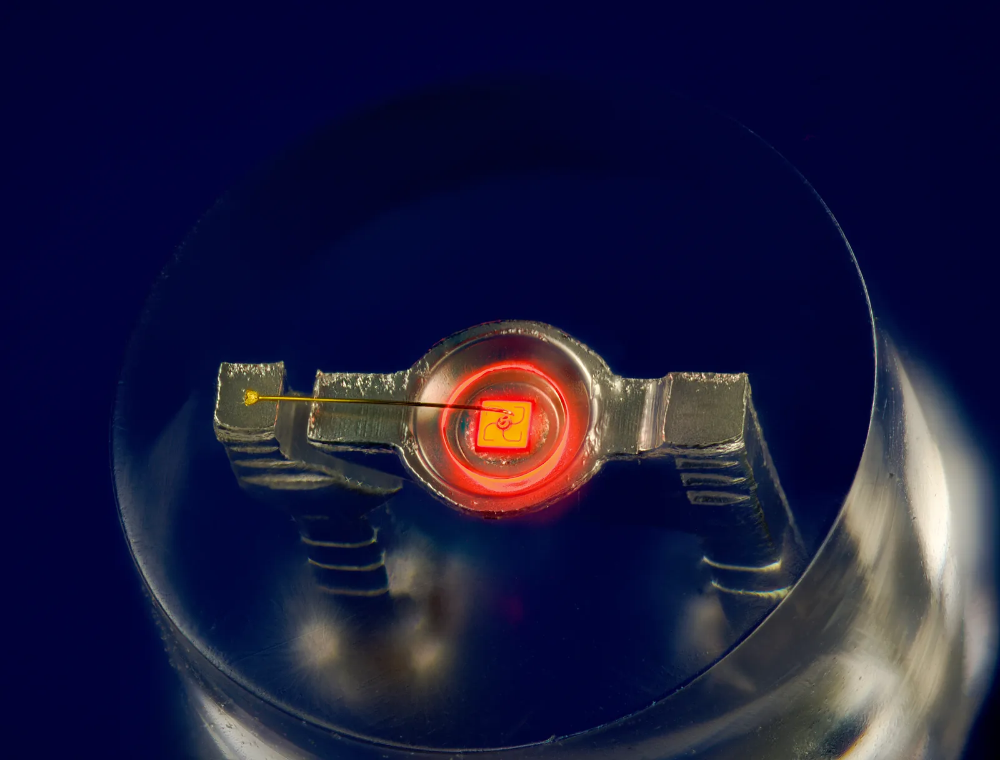
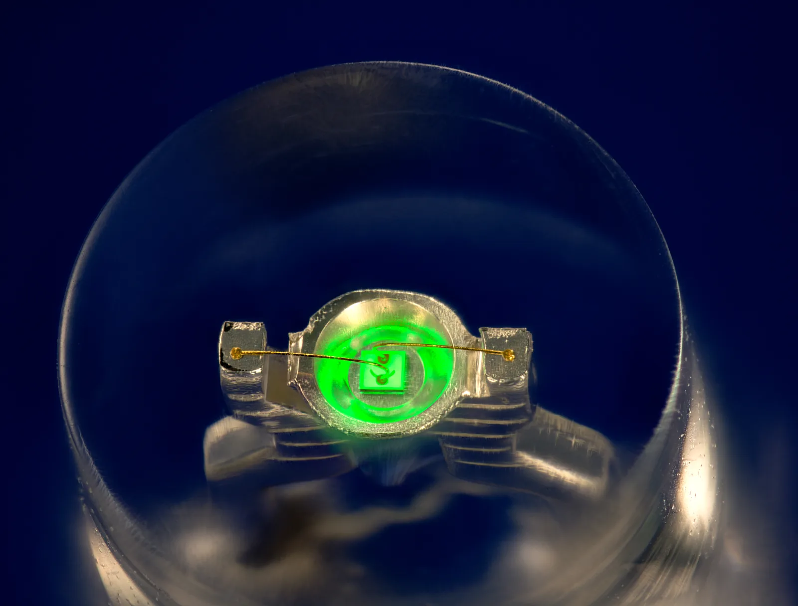
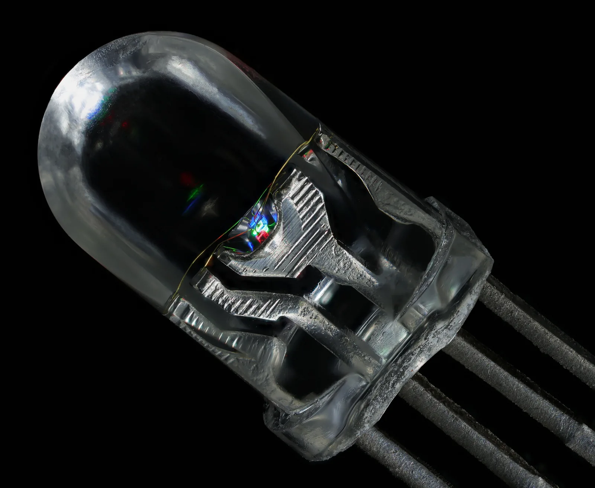

LEDin valo ja Planckin vakion mittaaminen
Miksi sininen LED tarvitsee syttyäkseen suuremman jännitteen kuin punainen LED?
Pohjatiedot
- Fotonin energia on $E = hf = \tfrac{hc}{\lambda}$, ja $1\,\text{eV} = 1{,}602 \cdot 10^{-19}\,\text{J}$ on energia, jonka elektroni saa $1\,\text{V}$:n jännitteessäluku Valosähköinen ilmiö ja fotoni
- Kun elektroni siirtyy ylemmältä energiatasolta alemmalle, syntyy fotoni, jonka energia on tasojen energioiden erotusluku Spektrit paljastavat atomin energiatasot
- Atomin elektronien tilat ja energiat ovat kvantittuneitaluku Aaltomekaaninen atomimalli ja orbitaalit
Ydinpolku: etene vaiheiden mukaan. Valinnainen-merkityt tehtävät tarjoavat lisäharjoittelua. Valinnaisia tehtäviä 4.
Pohdinta
Punainen, vihreä ja sininen LED kytketään rinnan samaan säädettävään jännitelähteeseen, ja jännitettä nostetaan hitaasti nollasta. LEDit eivät syty yhtä aikaa, vaikka niiden jännite on joka hetki sama.
Mikä ratkaisee, millä jännitteellä LED syttyy, ja miten tästä voi mitata Planckin vakion?
Valinnainen Kertaa: fotonin energia
Ennusta
Tee ennusteet ennen tutkimista 2 kysymystä
Ennuste 1: sama jännite, eri värit
Ennuste 2: virta jännitteen funktiona
Tutki
Valitse LED ja säädä sen jännitettä. Seuraa, millä jännitteellä virta alkaa kulkea ja LED syttyy. Jokaisesta kokeilemastasi jännitteestä jää kuvaajaan piste.
Simulaatio
Käyttöohje
Valitse LED valikosta ja säädä liukusäätimellä LEDin napojen välistä jännitettä $U$. Virtamittari ($\text{A}$) näyttää LEDin läpi kulkevan virran $I$ ja jännitemittari ($\text{V}$) LEDin jännitteen. LED hohtaa omalla värillään sitä kirkkaammin, mitä suurempi virta on, ja aaltoviivat ovat sen lähettämiä fotoneja. Oikealla (puhelimessa alla) on kuvaaja $(U, I)$: jokainen kokeilemasi jännite jää siihen pisteenä LEDin värillä, ja suuri piste on nykyinen tila. Tyhjennä kuvaaja poistaa pisteet. Yli $30\,\text{mA}$:n virtoja kuvaaja ei näytä, ja lukemissa näkyy silloin varoitus.
Mallin oletukset
Säädettävä jännitelähde ja suojavastus asettavat LEDin jännitteen; liukusäädin näyttää suoraan jännitemittarin lukeman. Mallissa virta on käytännössä nolla, kun jännite on pienempi kuin LEDin kynnysjännite, ja kasvaa sen yläpuolella suoraviivaisesti. Kaikilla mallin LEDeillä virta kasvaa kynnysjännitteen yläpuolella yhtä jyrkästi, mikä vastaa $18\,\Omega$:n vastusta. Mallin kynnysjännitteet ovat hieman pienempiä kuin $\tfrac{hc}{e\lambda}$, kuten oikeissa LEDeissä. Todellisen LEDin käyrä on vähän kaareva myös kynnysjännitteen yläpuolella, ja sen kynnysjännite muuttuu hieman lämpötilan mukana. Lukemat ovat mallin laskemia arvoja.
Laskennan selitys
Virta lasketaan yhtälöstä $I = \tfrac{s}{R} \ln\!\left(1 + \exp\tfrac{U - U_\text{k}}{s}\right)$, missä $s = 0{,}035\,\text{V}$, $R = 18\,\Omega$ ja $U_\text{k}$ on LEDin kynnysjännite. Kun $U$ on selvästi suurempi kuin $U_\text{k}$, yhtälö on likimain $I = \tfrac{U - U_\text{k}}{R}$: suora, joka leikkaa jänniteakselin kohdassa $U = U_\text{k}$. Kun $U$ on selvästi pienempi kuin $U_\text{k}$, virta on häviävän pieni.
Koe 1: sama jännite, kuusi LEDiä
Testaa ennuste 1. Jännite on lukittu arvoon $2{,}20\,\text{V}$; vaihda vain LEDiä. Kirjaa virta jokaisella kuudella LEDillä, ainakin kolmella. Mitkä LEDit syttyvät, ja mikä on niiden järjestys?
Alkutila: LED: punainen, jännite = $2{,}2\,\text{V}$. Vakiona: jännite. Muutetaan: LED $(\text{huippuaallonpituus})$.
| LED $(\text{huippuaallonpituus})$ | $I$ $(\text{mA})$ |
|---|
Koe 2: punaisen LEDin kynnysjännite
Testaa ennuste 2. Punainen LED on valittu; muuta vain jännitettä. Kirjaa virta ainakin jännitteillä $1{,}50$; $1{,}70$; $1{,}80$; $1{,}90$; $2{,}00$; $2{,}10$; $2{,}20$; $2{,}30$ ja $2{,}40\,\text{V}$. Millä jännitteellä virta alkaa kasvaa jyrkästi?
Alkutila: LED: punainen, jännite = $1{,}5\,\text{V}$. Vakiona: LED $(\text{huippuaallonpituus})$. Muutetaan: jännite.
| jännite | $I$ $(\text{mA})$ |
|---|
Piirrä mittauksistasi kuvaaja $(U, I)$ paperille tai Graphical Analysis Prohon. Sovita suora niihin pisteisiin, joissa virta kasvaa suoraviivaisesti (noin $2{,}0$–$2{,}4\,\text{V}$), ja jatka sitä jänniteakselille.
Mikä on punaisen LEDin kynnysjännite? Vastaa voltteina.
Vihje 1: ohjaava kysymys
Kynnysjännite on jännite, jossa kuvaajan suoran osan jatke leikkaa jänniteakselin eli kohdan $I = 0$.
Vihje 2: mikä yhteys
Suoralla osalla virta kasvaa noin $5{,}6\,\text{mA}$ jokaista $0{,}10\,\text{V}$:n lisäystä kohti, eli kulmakerroin on noin $55\,\tfrac{\text{mA}}{\text{V}}$.
Vihje 3: välivaihe
Jännitteellä $2{,}40\,\text{V}$ virta on $28{,}9\,\text{mA}$. Suoran mukaan virta laskee nollaan, kun jännitettä pienennetään $28{,}9\,\text{mA} : 55{,}5\,\tfrac{\text{mA}}{\text{V}}$.
Näytä ratkaisu
Annettu
punaisen LEDin mallin lukemat taulukosta: $2{,}00\,\text{V}$: $6{,}73\,\text{mA}$; $2{,}10\,\text{V}$: $12{,}23\,\text{mA}$; $2{,}20\,\text{V}$: $17{,}78\,\text{mA}$; $2{,}30\,\text{V}$: $23{,}33\,\text{mA}$; $2{,}40\,\text{V}$: $28{,}89\,\text{mA}$; jännitteillä $1{,}90\,\text{V}$ ja sen alle virta on alle $2\,\text{mA}$
Kysytty
kynnysjännite $U_\text{k}$ voltteina
Periaate
Kynnysjännitteen yläpuolella LEDin virta kasvaa lähes suoraviivaisesti. Kynnysjännite määritellään jännitteeksi, jossa tämän suoran osan jatke leikkaa jänniteakselin ($I = 0$). Kaarevan alkuosan pisteet eivät kuulu suoraan, joten ne jätetään sovituksesta pois.
Kuvaajan lukeminen
Pisteet välillä $2{,}00$–$2{,}40\,\text{V}$ ovat suoralla, ja pisteet $1{,}90\,\text{V}$:n alapuolella kaartuvat kohti nollaa. Suoralta valitaan kaksi kaukana toisistaan olevaa pistettä, $(2{,}10\,\text{V}$; $12{,}23\,\text{mA})$ ja $(2{,}40\,\text{V}$; $28{,}89\,\text{mA})$.
Kaava
kulmakerroin $k = \dfrac{I_2 - I_1}{U_2 - U_1}$ ja suora $I = k\,(U - U_\text{k})$; kohdassa $I = I_2$ saadaan $U_\text{k} = U_2 - \dfrac{I_2}{k}$
Muunnokset
Ei tarvita: milliampeerit supistuvat, kun virta jaetaan kulmakertoimella yksikössä $\tfrac{\text{mA}}{\text{V}}$.
Sijoitus
joten
Vastaus
$1{,}88\,\text{V}$
Sadasosavoltin tarkkuudella kuten jännitteen lukemat.
Järkevyys
Punaisen valon fotonin energia on $1240\,\text{eV}\,\text{nm} : 630\,\text{nm} \approx 1{,}97\,\text{eV}$, joten kynnysjännitteen pitää olla lähellä $1{,}97\,\text{V}$. Saatu arvo on noin $0{,}1\,\text{V}$ pienempi, kuten oikeillakin LEDeillä. Taulukossa virta on myös lähes nolla juuri tämän jännitteen alapuolella.
Johtopäätös: mikä ratkaisee syttymisen?
Kirjoita taulukoidesi perusteella: missä järjestyksessä LEDit syttyivät samalla jännitteellä? Miten punaisen LEDin virta muuttui jännitteen kasvaessa? Selitä fotonin energian avulla, miksi lyhyemmän aallonpituuden LED tarvitsee suuremman jännitteen.
Mallivastaus
Jännitteellä $2{,}20\,\text{V}$ punaisen LEDin virta oli $17{,}8\,\text{mA}$, oranssin $13{,}9\,\text{mA}$, keltaisen $11{,}1\,\text{mA}$ ja vihreän vain $0{,}11\,\text{mA}$; sininen ja violetti eivät johtaneet lainkaan. Mitä lyhyempi aallonpituus, sitä suurempi jännite tarvittiin. Punaisen LEDin virta oli lähes nolla noin $1{,}9\,\text{V}$:iin asti ja kasvoi sitten suoraviivaisesti, noin $5{,}6\,\text{mA}$ jokaista $0{,}10\,\text{V}$:a kohti. Suoran osan jatke leikkasi jänniteakselin noin $1{,}88\,\text{V}$:n kohdalla: se on punaisen LEDin kynnysjännite. Selitys: jännite $U$ antaa elektronille energian $eU$, ja elektroni synnyttää fotonin vasta, kun tämä energia on likimain fotonin energia $hf$. Lyhyemmän aallonpituuden fotonin energia on suurempi, joten kynnysjännitekin on suurempi. Arvot ovat mallin laskemia.
Arvioi oma vastauksesi
Rastita kohdat, jotka omassa vastauksessasi jo on.
Kertaa asia teoriatiivistelmästä ja harjoittele tehtävillä.
Planckin vakio kuuden LEDin aineistosta
Simuloitu esimerkkiaineisto · tämän luvun simulaation mallin kynnysjännitteet, eivät oikean mittauksen tuloksia
Taulukossa ovat simulaation kuuden LEDin kynnysjännitteet. Ne on määritetty samalla tavalla kuin kokeessa 2: kunkin LEDin kuvaajan $(U, I)$ suora osa on jatkettu jänniteakselille. Jos koulussa on LED-sarja ja mittauslaitteet, voit mitata omat arvosi ja käyttää niitä.
| LED | $\lambda$ (nm) | $U_\text{k}$ (V) |
|---|---|---|
| punainen | 630 | 1,88 |
| oranssi | 605 | 1,95 |
| keltainen | 590 | 2,00 |
| vihreä | 525 | 2,30 |
| sininen | 470 | 2,52 |
| violetti | 405 | 2,95 |
Käsittele aineisto Graphical Analysis Prossa:
- Valitse aloitusikkunasta Manuaalinen syöttö ja kirjoita taulukkoon sarakkeet $\lambda$ ja $U_\text{k}$ yksiköineen.
- Lisää taajuuden sarake valinnalla Lisää laskettu sarake. Kirjoita lauseke, joka jakaa valon nopeuden $2{,}998 \cdot 10^8\,\text{m/s}$ aallonpituudella metreinä: muista, että $1\,\text{nm} = 10^{-9}\,\text{m}$.
- Valitse kuvaajan vaaka-akselille $f$ ja pystyakselille $U_\text{k}$.
- Sovita suora kuvaajatyökaluista valinnoilla Käyrän sovitus, Lineaarinen ja Ota käyttöön. Tulosruudun $m$ on kulmakerroin $k$; ohjelma käyttää desimaalipistettä.
Laske sovitetun suoran kulmakertoimesta Planckin vakio. Alkeisvaraus on $e = 1{,}602 \cdot 10^{-19}\,\text{C}$. Vastaa yksikössä $\text{J}\,\text{s}$, esimerkiksi muodossa 6,5e-34.
Vihje 1: ohjaava kysymys
Yhtälöstä $eU_\text{k} = hf$ saadaan $U_\text{k} = \tfrac{h}{e}\,f$. Mikä suure on kuvaajan $(f, U_\text{k})$ kulmakerroin?
Vihje 2: mikä yhteys
Kulmakerroin on $k = \tfrac{h}{e}$, joten $h = ek$. Tarkista, että taajuudet ovat suuruusluokkaa $10^{14}\,\text{Hz}$.
Vihje 3: välivaihe
Sovituksen kulmakerroin on noin $4{,}05 \cdot 10^{-15}\,\text{V}\,\text{s}$. Kerro se alkeisvarauksella.
Näytä ratkaisu
Annettu
taulukosta kuuden LEDin huippuaallonpituudet $405$–$630\,\text{nm}$ ja kynnysjännitteet $1{,}88$–$2{,}95\,\text{V}$; $c = 2{,}998 \cdot 10^8\,\text{m/s}$, $e = 1{,}602 \cdot 10^{-19}\,\text{C}$
Kysytty
Planckin vakio $h$ yksikössä $\text{J}\,\text{s}$
Periaate
Kynnysjännitteellä elektronin saama energia on likimain fotonin energia, $eU_\text{k} \approx hf$, joten pisteet $(f, U_\text{k})$ ovat likimain suoralla, jonka kulmakerroin on $\tfrac{h}{e}$. Pisteet eivät ole täsmälleen samalla suoralla, joten suora sovitetaan kaikkiin kuuteen pisteeseen. Lähes sama poikkeama kaikilla LEDeillä siirtää suoraa mutta ei muuta kulmakerrointa.
Kuvaajan lukeminen
Taajuudet ovat $4{,}76$; $4{,}96$; $5{,}08$; $5{,}71$; $6{,}38$ ja $7{,}40 \cdot 10^{14}\,\text{Hz}$. Lineaarinen sovitus antaa kulmakertoimen $m = 4{,}054 \cdot 10^{-15}\,\tfrac{\text{V}}{\text{Hz}}$ ja vakiotermin $b = -0{,}050\,\text{V}$.
Kaava
$f = \dfrac{c}{\lambda}$ ja $k = \dfrac{h}{e}$, joten $h = ek$
Muunnokset
aallonpituudet metreiksi, esimerkiksi $630\,\text{nm} = 630 \cdot 10^{-9}\,\text{m}$, jolloin
kulmakertoimen yksikkö $\tfrac{\text{V}}{\text{Hz}} = \text{V}\,\text{s}$
Sijoitus
Vastaus
$6{,}49 \cdot 10^{-34}\,\text{J}\,\text{s}$
Kolme merkitsevää numeroa kuten kynnysjännitteissä.
Järkevyys
Tarkistus kauimmaisista pisteistä:
sama kuin sovituksessa. Tulos poikkeaa hyväksytystä arvosta $6{,}626 \cdot 10^{-34}\,\text{J}\,\text{s}$ noin $-2{,}0\,\%$. Vakiotermi $-0{,}05\,\text{V}$ on pieni verrattuna kynnysjännitteisiin, joten suora kulkee lähes origon kautta, kuten yhtälö $eU_\text{k} = hf$ ennustaa.
Teoriatiivistelmä
Ydinajatus
LED on puolijohdekomponentti
LED eli valodiodi on puolijohteesta valmistettu diodi: se päästää sähkövirtaa läpi vain yhteen suuntaan ja säteilee valoa, kun virta kulkee. Luvussa Spektrit paljastavat atomin energiatasot nähtiin, että yksittäisen atomin elektronilla on vain tietyt energiatasot. Kiinteässä aineessa atomit ovat niin lähellä toisiaan, että niiden energiatasot sulautuvat leveiksi energiavöiksi. Puolijohteessa elektronien lähes täyttämän valenssivyön ja lähes tyhjän johtavuusvyön välissä on energia-aukko $E_\text{g}$: energiaväli, jolla elektronilla ei voi olla tilaa.
Elektroni putoaa aukkoon, ja fotoni syntyy
LED on tehty kahdesta erilaisesta puolijohteesta. Toisen, n-alueen, johtavuusvyössä on vapaita elektroneja. Toisen, p-alueen, valenssivyössä on tyhjiä elektronin paikkoja eli aukkoja. Kun LEDin läpi kulkee virta, elektronit ja aukot kohtaavat alueiden rajapinnalla. Elektroni putoaa johtavuusvyöstä valenssivyön aukkoon ja luovuttaa energiansa yhtenä fotonina. Fotonin energia on likimain energia-aukon suuruinen, $hf \approx E_\text{g}$. LEDin väri riippuu siis puolijohdemateriaalista: punaisen LEDin puolijohteessa energia-aukko on noin $1{,}9\,\text{eV}$, sinisen noin $2{,}6\,\text{eV}$.


Kynnysjännite
Kun elektroni kulkee jännitteen $U$ yli, sähkökenttä tekee siihen työn $eU$, missä $e$ on alkeisvaraus. Juuri näin määriteltiin elektronivoltti luvussa Valosähköinen ilmiö ja fotoni. Jotta elektroni voisi synnyttää fotonin, jonka energia on $E_\text{g}$, sen on saatava jännitelähteeltä vähintään likimain tämä energia. Siksi LED ei pienellä jännitteellä juuri johda virtaa eikä säteile. Virta alkaa kasvaa jyrkästi, kun jännite saavuttaa LEDin kynnysjännitteen $U_\text{k}$, jolle $eU_\text{k} \approx E_\text{g} \approx hf$. Sinisen valon fotoni tarvitsee enemmän energiaa kuin punaisen, joten sinisen LEDin kynnysjännite on suurempi.
Kynnysjännitettä suurempi jännite kasvattaa virtaa, eli LEDin läpi kulkee sekunnissa enemmän elektroneja ja syntyy enemmän fotoneja. Yksittäisen fotonin energia ei kuitenkaan kasva, koska sen määrää energia-aukko. Ylimääräinen energia muuttuu LEDissä lämmöksi. LEDin väri pysyy siis samana, kun jännite kasvaa; vain valon kirkkaus kasvaa.
LED, laserdiodi ja hehkulamppu
Valonlähteitä voi vertailla mittaamalla niiden spektrin spektrometrillä, kuten luvussa Spektrit paljastavat atomin energiatasot. Hehkulampun kuuma hehkulanka säteilee jatkuvan spektrin, jossa on kaikkia näkyvän valon aallonpituuksia. LEDin spektri on kapea kaista, jonka leveys on tyypillisesti $20$–$40\,\text{nm}$, koska elektronien ja aukkojen energiat vaihtelevat hieman vöiden reunoilla. LEDin aallonpituudeksi ilmoitetaan spektrin huipun aallonpituus. Laserdiodi on LEDin kaltainen puolijohdediodi, jossa valo vahvistuu: sen spektri on hyvin kapea viiva, leveydeltään noin $1\,\text{nm}$, ja valo kulkee kapeana säteenä. Laserin toimintaan palataan luvussa Laser ja kvanttirakenteet. Laserdiodin säteeseen ei saa koskaan katsoa.

Kynnysjännite ja fotonin energia
Kynnysjännite ja aallonpituus
Kun LEDin kynnysjännite saavutetaan, elektronin jännitelähteeltä saama energia on likimain yhden fotonin energia:
$$eU_\text{k} \approx hf = \frac{hc}{\lambda}$$
missä $e = 1{,}602 \cdot 10^{-19}\,\text{C}$ on alkeisvaraus, $U_\text{k}$ LEDin kynnysjännite ($\text{V}$), $h = 6{,}626 \cdot 10^{-34}\,\text{J}\,\text{s}$ Planckin vakio, $f$ valon taajuus ($\text{Hz}$), $c = 2{,}998 \cdot 10^8\,\text{m/s}$ valon nopeus ja $\lambda$ LEDin spektrin huipun aallonpituus ($\text{m}$). Punaisen LEDin, $\lambda = 630\,\text{nm}$, kynnysjännitteeksi tämä antaa $U_\text{k} \approx \tfrac{hc}{e\lambda}$. Luvussa Valosähköinen ilmiö ja fotoni laskettiin $hc = 1240\,\text{eV}\,\text{nm}$, ja koska $1\,\text{eV} = e \cdot 1\,\text{V}$, on $\tfrac{hc}{e} = 1240\,\text{V}\,\text{nm}$. Siten $U_\text{k} \approx 1240\,\text{V}\,\text{nm} : 630\,\text{nm} = 1{,}97\,\text{V}$. Mitattu kynnysjännite on yleensä hieman pienempi, esimerkiksi $1{,}88\,\text{V}$. Fotonin energia elektronivoltteina on likimain sama luku kuin kynnysjännite voltteina, koska $1\,\text{eV}$ on energia, jonka elektroni saa $1\,\text{V}$:n jännitteessä.
Kynnysjännitteen määrittäminen
Kynnysjännite mitataan kytkemällä LED sarjaan suojavastuksen ja virtamittarin kanssa säädettävään jännitelähteeseen ja jännitemittari LEDin napojen väliin. Jännitettä kasvatetaan vähitellen, ja kullakin jännitteellä kirjataan virta. Kuvaajassa $(U, I)$ virta on aluksi lähes nolla ja kasvaa sitten lähes suoraviivaisesti. Kynnysjännite saadaan, kun kuvaajan suoraan osaan sovitettu suora jatketaan jänniteakselille, jolla $I = 0$. Menetelmä on toistettavampi kuin sen jännitteen etsiminen, jolla LED näyttää alkavan hehkua, koska silmän herkkyys vaihtelee eri väreillä ja eri ihmisillä.
Planckin vakio kulmakertoimesta
Yhtälöstä $eU_\text{k} = hf$ saadaan kynnysjännite taajuuden funktiona:
$$U_\text{k} = \frac{h}{e}\,f$$
Kun usean eri värisen LEDin kynnysjännitteet piirretään kuvaajaksi $(f, U_\text{k})$, pisteet ovat likimain suoralla, jonka kulmakerroin on $k = \tfrac{h}{e}$. Planckin vakio saadaan kulmakertoimesta:
$$h = ek$$
missä $k$ on sovitetun suoran kulmakerroin ($\tfrac{\text{V}}{\text{Hz}} = \text{V}\,\text{s}$) ja $e$ alkeisvaraus; $\text{C} \cdot \text{V}\,\text{s} = \text{J}\,\text{s}$. Kulmakerroin luetaan sovitetulta suoralta, ei kahdesta mittauspisteestä. Graphical Analysis Prossa suora sovitetaan valinnoilla Käyrän sovitus ja Lineaarinen, ja tulosruudun $m$ on kulmakerroin.
Todellisissa mittaussarjoissa mittauspisteet eivät yleensä sijaitse täsmälleen samalla suoralla mittausepävarmuuden vuoksi. Lisäksi suora ei yleensä kulje täsmälleen origon kautta: kuvan aineistossa se leikkaa pystyakselin noin $0{,}05\,\text{V}$ nollan alapuolella. Mitattu kynnysjännite ei ole tarkalleen $\tfrac{hf}{e}$: elektronit saavat hieman lisäenergiaa myös lämpöliikkeestä, ja kynnysjännite määritellään suoran jatkeena. Ero on tyypillisesti noin $0{,}1\,\text{V}$. Kun ero on lähes sama kaikille LEDeille, se siirtää suoraa mutta ei muuta sen kulmakerrointa. Siksi Planckin vakio määritetään monen LEDin suorasta eikä yhdestä LEDistä. Epävarmuutta tuo myös LEDin spektrin leveys: huipun aallonpituus tunnetaan vain muutaman nanometrin tarkkuudella.
Yleinen virhekäsitys
Moni ajattelee, että LEDin jännitettä kasvattamalla sen valo muuttuu sinisemmäksi, koska elektronit saavat enemmän energiaa. Fotonin energian määrää kuitenkin puolijohteen energia-aukko, ei jännite. Kynnysjännitettä suurempi jännite kasvattaa virtaa, joten fotoneja syntyy enemmän ja LED loistaa kirkkaammin, mutta jokaisen fotonin energia on yhä likimain $E_\text{g}$. Ylimääräinen energia lämmittää LEDiä. Punaisesta LEDistä ei siksi saa sinistä valoa millään jännitteellä, ja liian suuri virta vain rikkoo LEDin.
Toinen virhe on luulla, että mittaus on epäonnistunut, jos kuvaajan $(f, U_\text{k})$ suora ei kulje origon kautta. Mitattu kynnysjännite eroaa arvosta $\tfrac{hf}{e}$ lähes yhtä paljon kaikilla LEDeillä. Ero siirtää suoraa ylös tai alas mutta ei muuta sen kulmakerrointa $\tfrac{h}{e}$, josta Planckin vakio saadaan.
Tiivistelmä
- LEDissä elektroni putoaa puolijohteen johtavuusvyöstä valenssivyön aukkoon ja synnyttää yhden fotonin, jonka energia on likimain energia-aukon suuruinen: $hf \approx E_\text{g}$.
- LED alkaa johtaa ja säteillä, kun jännite saavuttaa kynnysjännitteen: $eU_\text{k} \approx hf = \tfrac{hc}{\lambda}$. Lyhyemmän aallonpituuden LED tarvitsee suuremman kynnysjännitteen.
- Kynnysjännite saadaan jatkamalla $(U, I)$-kuvaajan suora osa jänniteakselille.
- Kuvaajan $(f, U_\text{k})$ kulmakerroin on $k = \tfrac{h}{e}$, joten $h = ek$. Suoran ei tarvitse kulkea origon kautta.
- Hehkulampun spektri on jatkuva, LEDin spektri kapea kaista ja laserdiodin spektri hyvin kapea viiva.
Valinnainen Palaa ennusteisiisi
Vertaa ennusteitasi kokeiden mallin arvoihin ja yhtälöön $eU_\text{k} \approx hf$. Palaa sitten alun kysymykseen: miksi sininen LED tarvitsee syttyäkseen suuremman jännitteen kuin punainen?
Muuttaisitko ennustettasi?
Sovella
Esimerkki
Tehtävä
Ryhmä mittasi viiden eri värisen LEDin kynnysjännitteet ja sovitti pisteisiin $(f, U_\text{k})$ suoran. Sovitettu suora kulkee pisteiden $(4{,}50 \cdot 10^{14}\,\text{Hz}$; $1{,}74\,\text{V})$ ja $(7{,}50 \cdot 10^{14}\,\text{Hz}$; $2{,}96\,\text{V})$ kautta. Alkeisvaraus on $e = 1{,}602 \cdot 10^{-19}\,\text{C}$. Minkä arvon ryhmä sai Planckin vakiolle?
Vaihe 1/7
Tunnetut ja kysytty. Sovitetun suoran pisteet $(f_1, U_1) = (4{,}50 \cdot 10^{14}\,\text{Hz}$; $1{,}74\,\text{V})$ ja $(f_2, U_2) = (7{,}50 \cdot 10^{14}\,\text{Hz}$; $2{,}96\,\text{V})$ sekä alkeisvaraus $e = 1{,}602 \cdot 10^{-19}\,\text{C}$. Kysytään Planckin vakiota $h$.
Vaihe 2/7
Periaate. Kynnysjännitteellä elektronin saama energia on likimain fotonin energia, $eU_\text{k} \approx hf$, joten kuvaajan $(f, U_\text{k})$ kulmakerroin on $k = \tfrac{h}{e}$. Kulmakerroin lasketaan kahdesta sovitetun suoran pisteestä, jotka ovat kaukana toisistaan, ei yksittäisistä mittauspisteistä.
Vaihe 3/7
Kaava ratkaistuna. Kulmakerroin on $k = \tfrac{U_2 - U_1}{f_2 - f_1}$, ja yhtälöstä $k = \tfrac{h}{e}$ ratkaistaan $h$:
$$h = ek = \frac{e\,(U_2 - U_1)}{f_2 - f_1}$$
Vaihe 4/7
Yksikkömuunnokset. Ei tarvita: jännitteet ovat voltteina ja taajuudet hertseinä. Yksiköistä
koska $1\,\text{C} \cdot 1\,\text{V} = 1\,\text{J}$ ja $1\,\text{Hz} = 1\,\tfrac{1}{\text{s}}$.
Vaihe 5/7
Sijoitus. Erotukset ovat
$$\begin{aligned} h &= \frac{e\,(U_2 - U_1)}{f_2 - f_1} \\ &= \frac{1{,}602 \cdot 10^{-19}\,\text{C} \cdot 1{,}22\,\text{V}}{3{,}00 \cdot 10^{14}\,\tfrac{1}{\text{s}}} \\ &= 6{,}515 \cdot 10^{-34}\,\text{J}\,\text{s} \end{aligned}$$
Vaihe 6/7
Tulos. Ryhmän arvo Planckin vakiolle on $h = 6{,}52 \cdot 10^{-34}\,\text{J}\,\text{s}$. Tulos ilmoitetaan kolmella merkitsevällä numerolla, koska jännitteiden erotuksessa $1{,}22\,\text{V}$ ja taajuuksien erotuksessa $3{,}00 \cdot 10^{14}\,\text{Hz}$ on kolme merkitsevää numeroa.
Vaihe 7/7
Järkevyys. Planckin vakion hyväksytty arvo on $6{,}626 \cdot 10^{-34}\,\text{J}\,\text{s}$, ja ryhmän tulos poikkeaa siitä $(6{,}515 - 6{,}626) : 6{,}626 \approx -1{,}7\,\%$. Ero on pieni, kun kynnysjännitteet ja aallonpituudet tunnetaan vain muutaman prosentin tarkkuudella. Arvio pyöreillä luvuilla:
ja
Valinnainen Etsi virhe
Sovella uuteen tilanteeseen
Television kaukosäätimessä on LED, jonka valoa silmä ei näe. Sen kynnysjännitteeksi mitataan $1{,}30\,\text{V}$. Käytä arvoja $h = 6{,}626 \cdot 10^{-34}\,\text{J}\,\text{s}$, $c = 2{,}998 \cdot 10^8\,\text{m/s}$ ja $e = 1{,}602 \cdot 10^{-19}\,\text{C}$. Arvioi LEDin säteilyn aallonpituus. Vastaa nanometreinä.
Vihje 1: ohjaava kysymys
Kynnysjännitteellä elektronin jännitelähteeltä saama energia on likimain yhden fotonin energia.
Vihje 2: mikä yhteys
Ratkaise yhtälöstä $eU_\text{k} = \tfrac{hc}{\lambda}$ aallonpituus $\lambda$.
Vihje 3: välivaihe
joten $\lambda = \tfrac{hc}{eU_\text{k}}$. Muunna lopuksi metrit nanometreiksi.
Näytä ratkaisu
Annettu
kynnysjännite $U_\text{k} = 1{,}30\,\text{V}$, $h = 6{,}626 \cdot 10^{-34}\,\text{J}\,\text{s}$, $c = 2{,}998 \cdot 10^8\,\text{m/s}$, $e = 1{,}602 \cdot 10^{-19}\,\text{C}$
Kysytty
LEDin säteilyn aallonpituus $\lambda$ nanometreinä
Periaate
LED alkaa säteillä, kun elektronin jännitelähteeltä saama energia $eU_\text{k}$ on likimain yhden fotonin energia $\tfrac{hc}{\lambda}$. Sama periaate pätee näkymättömään infrapunaan kuin näkyvään valoon. Koska mitattu kynnysjännite on yleensä hieman pienempi kuin $\tfrac{hf}{e}$, tulos on arvio.
Kaava
$eU_\text{k} = \dfrac{hc}{\lambda}$, joten $\lambda = \dfrac{hc}{eU_\text{k}}$
Muunnokset
koska $1\,\text{C} \cdot 1\,\text{V} = 1\,\text{J}$; tulos metreistä nanometreiksi $1\,\text{m} = 10^{9}\,\text{nm}$
Sijoitus
joten
Vastaus
noin $954\,\text{nm}$, kolme merkitsevää numeroa kuten jännitteessä $1{,}30\,\text{V}$.
Järkevyys
Pyöreillä luvuilla $1240\,\text{V}\,\text{nm} : 1{,}30\,\text{V} \approx 950\,\text{nm}$. Aallonpituus on yli $700\,\text{nm}$, joten säteily on infrapunaa, jota silmä ei näe, kuten tehtävässä kerrotaan. Todellisen aallonpituuden pitäisi olla hieman lyhyempi, koska mitattu kynnysjännite on yleensä hieman pienempi kuin $\tfrac{hf}{e}$: kaukosäätimien LEDit säteilevät tyypillisesti noin $940\,\text{nm}$:n aallonpituudella.
Tarkista osaamisesi
Exit ticket
Vastaa ensin itse ja avaa vastaus vasta sitten.
- Violetin laserdiodin aallonpituus on $405\,\text{nm}$. Arvioi sen kynnysjännite.
Vastaus
Kynnysjännitteellä $eU_\text{k} \approx \tfrac{hc}{\lambda}$, joten $U_\text{k} \approx \tfrac{hc}{e\lambda}$. Lasketaan ensin
$hc$$= 1{,}9865 \cdot 10^{-25}\,\text{J}\,\text{m}$$e\lambda$$= 1{,}602 \cdot 10^{-19}\,\text{C} \cdot 405 \cdot 10^{-9}\,\text{m}$$= 6{,}488 \cdot 10^{-26}\,\text{C}\,\text{m}$joten
$U_\text{k}$$\approx 1{,}9865 \cdot 10^{-25}\,\text{J}\,\text{m} : 6{,}488 \cdot 10^{-26}\,\text{C}\,\text{m}$$= 3{,}06\,\text{V}$Jokaisen elektronin on saatava jännitelähteeltä likimain yhden fotonin energia $3{,}06\,\text{eV}$; mitattu kynnysjännite on yleensä hieman tätä pienempi.
- Planckin vakion mittauksessa tarvitaan valonlähteen aallonpituus. Miksi laserdiodin aallonpituus tunnetaan tarkemmin kuin LEDin?
Vastaus
Laserdiodin spektri on hyvin kapea viiva, leveydeltään noin $1\,\text{nm}$, joten sen aallonpituus on lähes yksikäsitteinen. LEDin spektri on $20$–$40\,\text{nm}$ leveä kaista, joten sen aallonpituudeksi ilmoitettu huipun aallonpituus on epätarkempi, ja epävarmuus siirtyy taajuuteen $f = \tfrac{c}{\lambda}$.
1. Suurempi jännite
2. Kuvaajasta Planckin vakio
Kuvaajassa on toisen ryhmän mittaamat LEDien kynnysjännitteet taajuuden funktiona ja niihin sovitettu suora. Lue suoralta kaksi pistettä ja määritä Planckin vakio. Alkeisvaraus on $e = 1{,}602 \cdot 10^{-19}\,\text{C}$. Vastaa yksikössä $\text{J}\,\text{s}$.
Vihje 1: ohjaava kysymys
Valitse suoralta kaksi kaukana toisistaan olevaa pistettä, joissa suora kulkee ruutuviivojen risteyksen kautta.
Vihje 2: mikä yhteys
Kulmakerroin on $k = \tfrac{\Delta U_\text{k}}{\Delta f}$, ja Planckin vakio on $h = ek$. Muista taajuusakselin kerroin $10^{14}$.
Vihje 3: välivaihe
Suora kulkee pisteiden $(4{,}6 \cdot 10^{14}\,\text{Hz}$; $1{,}80\,\text{V})$ ja $(7{,}0 \cdot 10^{14}\,\text{Hz}$; $2{,}80\,\text{V})$ kautta.
Näytä ratkaisu
Annettu
kuvaajan sovitettu suora ja $e = 1{,}602 \cdot 10^{-19}\,\text{C}$
Kysytty
Planckin vakio $h$ yksikössä $\text{J}\,\text{s}$
Periaate
Kynnysjännitteellä $eU_\text{k} \approx hf$, joten kuvaajan $(f, U_\text{k})$ kulmakerroin on $\tfrac{h}{e}$. Kulmakerroin luetaan sovitetulta suoralta kahdesta kaukana toisistaan olevasta pisteestä, ei mittauspisteistä.
Kuvaajan lukeminen
Suora kulkee ruutuviivojen risteysten kautta kohdissa $(4{,}6 \cdot 10^{14}\,\text{Hz}$; $1{,}80\,\text{V})$ ja $(7{,}0 \cdot 10^{14}\,\text{Hz}$; $2{,}80\,\text{V})$. Vaakaruudun väli on $0{,}2 \cdot 10^{14}\,\text{Hz}$ ja pystyruudun $0{,}1\,\text{V}$.
Kaava
joten $h = \dfrac{e\,(U_2 - U_1)}{f_2 - f_1}$
Muunnokset
Taajuusakselin lukemat hertseiksi: $4{,}6 \cdot 10^{14}\,\text{Hz}$ ja $7{,}0 \cdot 10^{14}\,\text{Hz}$; $\text{C} \cdot \tfrac{\text{V}}{\text{Hz}} = \text{J}\,\text{s}$
Sijoitus
joten
Vastaus
$6{,}7 \cdot 10^{-34}\,\text{J}\,\text{s}$
Kaksi merkitsevää numeroa, koska taajuuksien erotus $2{,}4 \cdot 10^{14}\,\text{Hz}$ luetaan kahden numeron tarkkuudella.
Järkevyys
Hyväksytty arvo on $6{,}626 \cdot 10^{-34}\,\text{J}\,\text{s}$, ja tulos poikkeaa siitä alle $1\,\%$. Hyväksytyllä arvolla suora nousisi $1\,\text{V}$ taajuusvälillä
ja kuvaajassa väli on $2{,}4 \cdot 10^{14}\,\text{Hz}$.
Ehdotus: yksi vastaus ei vielä kerro koko osaamistasi, mutta kertaa asia teoriatiivistelmästä ja tee ydintehtävät.
Valinnainen 3. Selitä: sininen ja punainen LED
Selitä energian avulla, miksi sininen LED tarvitsee syttyäkseen suuremman jännitteen kuin punainen. Mainitse selityksessäsi elektroni, energia-aukko ja fotoni.
Mallivastaus
LEDissä elektroni putoaa johtavuusvyöstä valenssivyön aukkoon ja synnyttää yhden fotonin, jonka energia on likimain puolijohteen energia-aukon $E_\text{g}$ suuruinen. Jännite $U$ antaa jokaiselle LEDin läpi kulkevalle elektronille energian $eU$, joten fotoneja voi syntyä vasta, kun $eU$ on likimain fotonin energia $hf$. Sinisen valon aallonpituus on lyhyempi kuin punaisen, joten sen fotonin energia $\tfrac{hc}{\lambda}$ on suurempi: noin $2{,}6\,\text{eV}$ punaisen noin $2{,}0\,\text{eV}$:n sijaan. Sinisen LEDin puolijohteen energia-aukko on siksi suurempi, ja sen kynnysjännite on noin $2{,}5\,\text{V}$, kun punaisen on noin $1{,}9\,\text{V}$.
Arvioi oma vastauksesi
Rastita kohdat, jotka omassa vastauksessasi jo on.
Kertaa asia teoriatiivistelmästä ja harjoittele tehtävillä.
Kertaa luvun käsitteet
Jos valitset Kertaa myöhemmin, kortti siirtyy kertauspakkaasi.
- Puolijohde
- Aine, jonka sähkönjohtavuutta voidaan hallita esimerkiksi seostamalla tai lämpötilaa muuttamalla.
- Diodi
- Puolijohdekomponentti, joka johtaa sähkövirtaa pääasiassa yhteen suuntaan.
Tehtävät
Taso 1 · perusharjoitus 8 tehtävää
Yksi kaava tai yksi päättelyaskel. Ydintehtävät ensin, loput lisäharjoitusta.
- Tehtävä 6-1Ydintehtävä
Oranssin LEDin kynnysjännite on $1{,}95\,\text{V}$. Alkeisvaraus on $e = 1{,}602 \cdot 10^{-19}\,\text{C}$. Kuinka suuren energian elektroni saa jännitelähteeltä, kun se kulkee tämän jännitteen yli? Anna vastaus jouleina.
Vastaus
$3{,}12 \cdot 10^{-19}\,\text{J}$
Näytä ratkaisu
Annettu
kynnysjännite $U_\text{k} = 1{,}95\,\text{V}$, alkeisvaraus $e = 1{,}602 \cdot 10^{-19}\,\text{C}$
Kysytty
elektronin jännitelähteeltä saama energia $E$ jouleina
Periaate
Kun varaus $q$ kulkee jännitteen $U$ yli, sähkökenttä tekee siihen työn $qU$. Elektronin varauksen suuruus on alkeisvaraus $e$, joten se saa jännitelähteeltä energian $eU$. Juuri tämä energia on LEDissä käytettävissä fotonin synnyttämiseen.
Kaava
$E = eU_\text{k}$
Muunnokset
Ei tarvita: $1\,\text{C} \cdot 1\,\text{V} = 1\,\text{J}$.
Sijoitus
$E$$= 1{,}602 \cdot 10^{-19}\,\text{C} \cdot 1{,}95\,\text{V}$$= 3{,}1239 \cdot 10^{-19}\,\text{J}$Vastaus
$3{,}12 \cdot 10^{-19}\,\text{J}$
Kolme merkitsevää numeroa kuten jännitteessä $1{,}95\,\text{V}$.
Järkevyys
Elektronivoltteina energia on täsmälleen $1{,}95\,\text{eV}$, koska $1\,\text{eV}$ on energia, jonka elektroni saa $1\,\text{V}$:n jännitteessä. Se on oranssin valon fotonin energian suuruusluokkaa: $1240\,\text{eV}\,\text{nm} : 605\,\text{nm} \approx 2{,}0\,\text{eV}$.
- Tehtävä 6-2Ydintehtävä
Vihreän LEDin spektrin huippu on aallonpituudella $525\,\text{nm}$. Käytä arvoja $h = 6{,}626 \cdot 10^{-34}\,\text{J}\,\text{s}$, $c = 2{,}998 \cdot 10^8\,\text{m/s}$ ja $1\,\text{eV} = 1{,}602 \cdot 10^{-19}\,\text{J}$. Kuinka suuri on tämän aallonpituuden fotonin energia? Anna vastaus elektronivoltteina.
Vastaus
$2{,}36\,\text{eV}$
Näytä ratkaisu
Annettu
aallonpituus $\lambda = 525\,\text{nm}$, $h = 6{,}626 \cdot 10^{-34}\,\text{J}\,\text{s}$, $c = 2{,}998 \cdot 10^8\,\text{m/s}$, $1\,\text{eV} = 1{,}602 \cdot 10^{-19}\,\text{J}$
Kysytty
fotonin energia $E$ elektronivoltteina
Periaate
Valon energia on kvantittunut fotoneiksi, ja yhden fotonin energia on $E = hf$. Taajuus saadaan aallonpituudesta, koska valo etenee nopeudella $c = f\lambda$.
Kaava
$E = hf$ ja $f = \dfrac{c}{\lambda}$, joten $E = \dfrac{hc}{\lambda}$
Muunnokset
$\lambda$$= 525\,\text{nm}$$= 525 \cdot 10^{-9}\,\text{m}$tulos jouleista elektronivolteiksi jakamalla luvulla $1{,}602 \cdot 10^{-19}\,\tfrac{\text{J}}{\text{eV}}$
Sijoitus
$hc$$= 6{,}626 \cdot 10^{-34}\,\text{J}\,\text{s} \cdot 2{,}998 \cdot 10^8\,\text{m/s}$$= 1{,}9865 \cdot 10^{-25}\,\text{J}\,\text{m}$joten
$E$$= \dfrac{1{,}9865 \cdot 10^{-25}\,\text{J}\,\text{m}}{525 \cdot 10^{-9}\,\text{m}}$$= 3{,}7838 \cdot 10^{-19}\,\text{J}$$= \dfrac{3{,}7838 \cdot 10^{-19}}{1{,}602 \cdot 10^{-19}}\,\text{eV}$$= 2{,}362\,\text{eV}$Vastaus
$2{,}36\,\text{eV}$
Kolme merkitsevää numeroa kuten aallonpituudessa $525\,\text{nm}$.
Järkevyys
Pyöreillä luvuilla $1240\,\text{eV}\,\text{nm} : 525\,\text{nm} \approx 2{,}4\,\text{eV}$. Vihreä valo on näkyvän alueen keskellä, ja sen fotonin energia on punaisen, noin $2{,}0\,\text{eV}$, ja violetin, noin $3{,}1\,\text{eV}$, välissä.
- Tehtävä 6-3
Punaisen laserdiodin valon aallonpituus on $650\,\text{nm}$. Valon nopeus on $c = 2{,}998 \cdot 10^8\,\text{m/s}$. Mikä on valon taajuus? Anna vastaus hertseinä.
Vastaus
$4{,}61 \cdot 10^{14}\,\text{Hz}$
Näytä ratkaisu
Annettu
aallonpituus $\lambda = 650\,\text{nm}$, valon nopeus $c = 2{,}998 \cdot 10^8\,\text{m/s}$
Kysytty
valon taajuus $f$ hertseinä
Periaate
Laserdiodin valo on sähkömagneettista aaltoliikettä, joka etenee valon nopeudella. Aaltoliikkeen perusyhtälö $c = f\lambda$ sitoo taajuuden ja aallonpituuden toisiinsa.
Kaava
$c = f\lambda$, joten $f = \dfrac{c}{\lambda}$
Muunnokset
$\lambda$$= 650\,\text{nm}$$= 650 \cdot 10^{-9}\,\text{m}$Sijoitus
$f$$= \dfrac{2{,}998 \cdot 10^8\,\text{m/s}}{650 \cdot 10^{-9}\,\text{m}}$$= 4{,}612 \cdot 10^{14}\,\tfrac{1}{\text{s}}$Vastaus
$4{,}61 \cdot 10^{14}\,\text{Hz}$
Kolme merkitsevää numeroa kuten aallonpituudessa $650\,\text{nm}$.
Järkevyys
Näkyvän valon taajuudet ovat noin $4 \cdot 10^{14}\,\text{Hz}$–$8 \cdot 10^{14}\,\text{Hz}$, ja punainen valo on alueen matalataajuisessa päässä. Arvio:
$3 \cdot 10^8\,\text{m/s} : (6{,}5 \cdot 10^{-7}\,\text{m})$$\approx 4{,}6 \cdot 10^{14}\,\text{Hz}$ - Tehtävä 6-4
Galliumarsenidin energia-aukko on $1{,}42\,\text{eV}$. Siitä tehty LED säteilee fotoneja, joiden energia on likimain energia-aukon suuruinen. Käytä arvoja $h = 6{,}626 \cdot 10^{-34}\,\text{J}\,\text{s}$, $c = 2{,}998 \cdot 10^8\,\text{m/s}$ ja $1\,\text{eV} = 1{,}602 \cdot 10^{-19}\,\text{J}$.
Mikä on LEDin valon aallonpituus? Anna vastaus nanometreinä.
Vastaus
$873\,\text{nm}$
Näytä ratkaisu
Annettu
energia-aukko $E_\text{g} = 1{,}42\,\text{eV}$, $h = 6{,}626 \cdot 10^{-34}\,\text{J}\,\text{s}$, $c = 2{,}998 \cdot 10^8\,\text{m/s}$, $1\,\text{eV} = 1{,}602 \cdot 10^{-19}\,\text{J}$
Kysytty
LEDin valon aallonpituus $\lambda$ nanometreinä
Periaate
LEDissä elektroni putoaa johtavuusvyöstä valenssivyön aukkoon ja luovuttaa energiansa yhtenä fotonina. Fotonin energia on likimain energia-aukon suuruinen, $\tfrac{hc}{\lambda} \approx E_\text{g}$.
Kaava
$\dfrac{hc}{\lambda} = E_\text{g}$, joten $\lambda = \dfrac{hc}{E_\text{g}}$
Muunnokset
$E_\text{g}$$= 1{,}42\,\text{eV}$$= 1{,}42 \cdot 1{,}602 \cdot 10^{-19}\,\text{J}$$= 2{,}2748 \cdot 10^{-19}\,\text{J}$tulos metreistä nanometreiksi $1\,\text{m} = 10^{9}\,\text{nm}$
Sijoitus
$hc$$= 6{,}626 \cdot 10^{-34}\,\text{J}\,\text{s} \cdot 2{,}998 \cdot 10^8\,\text{m/s}$$= 1{,}9865 \cdot 10^{-25}\,\text{J}\,\text{m}$joten
$\lambda$$= \dfrac{1{,}9865 \cdot 10^{-25}\,\text{J}\,\text{m}}{2{,}2748 \cdot 10^{-19}\,\text{J}}$$= 8{,}733 \cdot 10^{-7}\,\text{m}$$= 873{,}3\,\text{nm}$Vastaus
$873\,\text{nm}$
Kolme merkitsevää numeroa kuten energia-aukossa $1{,}42\,\text{eV}$.
Järkevyys
Pyöreillä luvuilla $1240\,\text{eV}\,\text{nm} : 1{,}42\,\text{eV} \approx 870\,\text{nm}$. Aallonpituus on yli $700\,\text{nm}$, joten valo on infrapunaa. Se sopii, koska energia-aukko on pienempi kuin punaisen valon fotonin energia, noin $1{,}8\,\text{eV}$.
- Tehtävä 6-5
Opiskelija sovitti LEDien kynnysjännitteisiin taajuuden funktiona suoran, jonka kulmakerroin on $k = 4{,}10 \cdot 10^{-15}\,\text{V}\,\text{s}$. Alkeisvaraus on $e = 1{,}602 \cdot 10^{-19}\,\text{C}$. Minkä arvon opiskelija sai Planckin vakiolle? Anna vastaus yksikössä $\text{J}\,\text{s}$.
Vastaus
$6{,}57 \cdot 10^{-34}\,\text{J}\,\text{s}$
Näytä ratkaisu
Annettu
sovitetun suoran kulmakerroin $k = 4{,}10 \cdot 10^{-15}\,\text{V}\,\text{s}$, alkeisvaraus $e = 1{,}602 \cdot 10^{-19}\,\text{C}$
Kysytty
Planckin vakio $h$ yksikössä $\text{J}\,\text{s}$
Periaate
Kynnysjännitteellä elektronin saama energia on likimain fotonin energia, $eU_\text{k} = hf$. Siksi kynnysjännite on taajuuden suhteen suora $U_\text{k} = \tfrac{h}{e} f$, jonka kulmakerroin on $\tfrac{h}{e}$.
Kaava
$k = \dfrac{h}{e}$, joten $h = ek$
Muunnokset
Ei tarvita: $\text{C} \cdot \text{V}\,\text{s} = \text{J}\,\text{s}$, koska $1\,\text{C} \cdot 1\,\text{V} = 1\,\text{J}$.
Sijoitus
$h$$= 1{,}602 \cdot 10^{-19}\,\text{C} \cdot 4{,}10 \cdot 10^{-15}\,\text{V}\,\text{s}$$= 6{,}568 \cdot 10^{-34}\,\text{J}\,\text{s}$Vastaus
$6{,}57 \cdot 10^{-34}\,\text{J}\,\text{s}$
Kolme merkitsevää numeroa kuten kulmakertoimessa $4{,}10 \cdot 10^{-15}\,\text{V}\,\text{s}$.
Järkevyys
Hyväksytty arvo on $6{,}626 \cdot 10^{-34}\,\text{J}\,\text{s}$, ja tulos poikkeaa siitä $(6{,}568 - 6{,}626) : 6{,}626 \approx -0{,}9\,\%$. Kynnysjännitteisiin perustuvassa mittauksessa muutaman prosentin ero on tavallinen, joten tulos on uskottava.
- Tehtävä 6-6
Punaista LEDiä kytketään vähitellen kasvavaan jännitteeseen. Alle $1{,}5\,\text{V}$:n jännitteellä LED ei hohda lainkaan, mutta noin $1{,}8\,\text{V}$:n jälkeen se syttyy. Mikä selittää, että LED syttyy vasta kynnysjännitteellä?
Vastaus
Fotoni voi syntyä vasta, kun elektronin saama energia $eU$ on likimain fotonin energian $hf$ suuruinen.
Näytä ratkaisu
Kysytty
miksi LED syttyy vasta kynnysjännitteellä
Periaate
LEDissä elektroni putoaa johtavuusvyöstä valenssivyön aukkoon ja luovuttaa energiansa yhtenä fotonina, jonka energia on likimain $hf \approx E_\text{g}$. Elektroni saa jännitelähteeltä energian $eU$, ja kynnysjännitteellä $eU_\text{k} \approx hf$.
Mallivastaus
Fotoni voi syntyä vasta, kun elektronin saama energia $eU$ on likimain fotonin energian $hf$ suuruinen. Pienemmällä jännitteellä energia ei riitä, joten fotoneja ei synny ja LED pysyy pimeänä. Kynnysjännitteen jälkeen virta kasvaa jyrkästi, ja fotoneja syntyy enemmän, joten LED loistaa kirkkaammin. Väärät selitykset ovat muut vaihtoehdot: LEDin valo ei synny lämpenemisestä, saman LEDin valon väri ei muutu jännitettä säätämällä, koska fotonin energian määrää energia-aukko, eikä LEDin kuori estä fotoneja pääsemästä ulos.
- Tehtävä 6-7
Vihreän LEDin kynnysjännite on $2{,}30\,\text{V}$. Oletetaan, että kynnysjännitteellä elektronin jännitelähteeltä saama energia on täsmälleen yhden fotonin energia, $eU_\text{k} = \tfrac{hc}{\lambda}$.
Käytä arvoja $h = 6{,}626 \cdot 10^{-34}\,\text{J}\,\text{s}$, $c = 2{,}998 \cdot 10^8\,\text{m/s}$ ja $e = 1{,}602 \cdot 10^{-19}\,\text{C}$.
Mikä on LEDin valon aallonpituus? Anna vastaus nanometreinä.
Vastaus
$539\,\text{nm}$
Näytä ratkaisu
Annettu
kynnysjännite $U_\text{k} = 2{,}30\,\text{V}$, $eU_\text{k} = \tfrac{hc}{\lambda}$, $h = 6{,}626 \cdot 10^{-34}\,\text{J}\,\text{s}$, $c = 2{,}998 \cdot 10^8\,\text{m/s}$, $e = 1{,}602 \cdot 10^{-19}\,\text{C}$
Kysytty
LEDin valon aallonpituus $\lambda$ nanometreinä
Periaate
Kynnysjännitteellä elektronin jännitelähteeltä saama energia $eU_\text{k}$ on likimain yhden fotonin energia $\tfrac{hc}{\lambda}$. Yhtälöstä voi ratkaista aallonpituuden, koska valon taajuus ja aallonpituus liittyvät yhtälöön $c = f\lambda$.
Kaava
$eU_\text{k} = \dfrac{hc}{\lambda}$, joten $\lambda = \dfrac{hc}{eU_\text{k}}$
Muunnokset
Ei tarvita muuta kuin tuloksen muunnos metreistä nanometreiksi: $1\,\text{m} = 10^{9}\,\text{nm}$. Tulossa $e \cdot U_\text{k}$ on $1\,\text{C} \cdot 1\,\text{V} = 1\,\text{J}$.
Sijoitus
$hc$$= 6{,}626 \cdot 10^{-34}\,\text{J}\,\text{s} \cdot 2{,}998 \cdot 10^8\,\text{m/s}$$= 1{,}9865 \cdot 10^{-25}\,\text{J}\,\text{m}$$eU_\text{k}$$= 1{,}602 \cdot 10^{-19}\,\text{C} \cdot 2{,}30\,\text{V}$$= 3{,}6846 \cdot 10^{-19}\,\text{J}$joten
$\lambda$$= \dfrac{1{,}9865 \cdot 10^{-25}\,\text{J}\,\text{m}}{3{,}6846 \cdot 10^{-19}\,\text{J}}$$= 5{,}391 \cdot 10^{-7}\,\text{m}$$= 539{,}1\,\text{nm}$Vastaus
$539\,\text{nm}$
Kolme merkitsevää numeroa kuten kynnysjännitteessä $2{,}30\,\text{V}$.
Järkevyys
Pyöreillä luvuilla $1240\,\text{V}\,\text{nm} : 2{,}30\,\text{V} \approx 539\,\text{nm}$. Aallonpituus on näkyvän valon vihreällä alueella ($500$–$570\,\text{nm}$), kuten LEDin värin mukaan pitääkin olla.
- Tehtävä 6-8
Merkkivalona toimivan LEDin läpi kulkee virta $10{,}0\,\text{mA}$. Alkeisvaraus on $e = 1{,}602 \cdot 10^{-19}\,\text{C}$. Kuinka monta elektronia kulkee LEDin läpi sekunnissa? Anna vastaus muodossa $x \cdot 10^{16}\,\tfrac{1}{\text{s}}$ ja kirjoita laatikkoon luku $x$.
Vastaus
$6{,}24 \cdot 10^{16}\,\tfrac{1}{\text{s}}$
Näytä ratkaisu
Annettu
virta $I = 10{,}0\,\text{mA}$, alkeisvaraus $e = 1{,}602 \cdot 10^{-19}\,\text{C}$
Kysytty
LEDin läpi sekunnissa kulkevien elektronien lukumäärä $N = x \cdot 10^{16}\,\tfrac{1}{\text{s}}$, vastauslaatikkoon luku $x$
Periaate
Sähkövirta kertoo, kuinka paljon varausta kulkee sekunnissa: $I = \tfrac{Q}{t}$. Jokaisen elektronin varauksen suuruus on $e$, joten sekunnissa kulkee $N = \tfrac{I}{e}$ elektronia.
Kaava
$I = \dfrac{Ne}{t}$, joten $N = \dfrac{I}{e}$ (elektronien määrä sekunnissa)
Muunnokset
$I$$= 10{,}0\,\text{mA}$$= 0{,}0100\,\text{A}$$= 0{,}0100\,\tfrac{\text{C}}{\text{s}}$Sijoitus
$N$$= \dfrac{0{,}0100\,\text{C/s}}{1{,}602 \cdot 10^{-19}\,\text{C}}$$= 6{,}242 \cdot 10^{16}\,\tfrac{1}{\text{s}}$Vastaus
$6{,}24 \cdot 10^{16}\,\tfrac{1}{\text{s}}$
Eli $x = 6{,}24$, kolme merkitsevää numeroa kuten virrassa $10{,}0\,\text{mA}$.
Järkevyys
Virta $1\,\text{A}$ vastaa noin $6{,}2 \cdot 10^{18}$ elektronia sekunnissa, ja $10\,\text{mA}$ on sadasosa tästä eli $6{,}2 \cdot 10^{16}$ elektronia sekunnissa. Jos jokainen elektroni synnyttäisi fotonin, LED lähettäisi yhtä monta fotonia sekunnissa.
Taso 2 · soveltava harjoitus 7 tehtävää
Kaksi vaihetta, mittausaineiston käsittely, yksikkömuunnos tai kaavan ratkaiseminen. Ydintehtävät ensin, loput lisäharjoitusta.
- Tehtävä 6-9Ydintehtävä
Sinisen LEDin spektrin huippu on aallonpituudella $470\,\text{nm}$. Käytä arvoja $h = 6{,}626 \cdot 10^{-34}\,\text{J}\,\text{s}$, $c = 2{,}998 \cdot 10^8\,\text{m/s}$ ja $e = 1{,}602 \cdot 10^{-19}\,\text{C}$. Arvioi, kuinka suuri jännite LEDiin on vähintään kytkettävä, jotta se alkaa säteillä. Anna vastaus voltteina.
Vastaus
$2{,}64\,\text{V}$
Näytä ratkaisu
Annettu
aallonpituus $\lambda = 470\,\text{nm}$, $h = 6{,}626 \cdot 10^{-34}\,\text{J}\,\text{s}$, $c = 2{,}998 \cdot 10^8\,\text{m/s}$, $e = 1{,}602 \cdot 10^{-19}\,\text{C}$
Kysytty
pienin jännite eli kynnysjännite $U_\text{k}$ voltteina
Periaate
LED säteilee vasta, kun jokainen elektroni saa jännitelähteeltä vähintään likimain yhden fotonin energian. Kynnysjännitteellä elektronin energia $eU_\text{k}$ on fotonin energian $\tfrac{hc}{\lambda}$ suuruinen.
Kaava
$eU_\text{k} = \dfrac{hc}{\lambda}$, joten $U_\text{k} = \dfrac{hc}{e\lambda}$
Muunnokset
$\lambda$$= 470\,\text{nm}$$= 470 \cdot 10^{-9}\,\text{m}$$1\,\tfrac{\text{J}}{\text{C}} = 1\,\text{V}$
Sijoitus
$hc$$= 6{,}626 \cdot 10^{-34}\,\text{J}\,\text{s} \cdot 2{,}998 \cdot 10^8\,\text{m/s}$$= 1{,}9865 \cdot 10^{-25}\,\text{J}\,\text{m}$joten
$e\lambda$$= 1{,}602 \cdot 10^{-19}\,\text{C} \cdot 470 \cdot 10^{-9}\,\text{m}$$= 7{,}5294 \cdot 10^{-26}\,\text{C}\,\text{m}$$U_\text{k}$$= \dfrac{1{,}9865 \cdot 10^{-25}\,\text{J}\,\text{m}}{7{,}5294 \cdot 10^{-26}\,\text{C}\,\text{m}}$$= 2{,}638\,\text{V}$Vastaus
noin $2{,}64\,\text{V}$, kolme merkitsevää numeroa kuten aallonpituudessa $470\,\text{nm}$.
Järkevyys
Pyöreillä luvuilla $1240\,\text{V}\,\text{nm} : 470\,\text{nm} \approx 2{,}6\,\text{V}$. Jännite on suurempi kuin punaisen LEDin noin $1{,}9\,\text{V}$, koska sinisen valon fotoni tarvitsee enemmän energiaa. Mitattu kynnysjännite on yleensä noin $0{,}1\,\text{V}$ tätä arviota pienempi.
- Tehtävä 6-10Ydintehtävä
Oranssin LEDin huippuaallonpituus on $605\,\text{nm}$, ja sen kynnysjännitteeksi mitataan $1{,}95\,\text{V}$. Käytä arvoja $c = 2{,}998 \cdot 10^8\,\text{m/s}$ ja $e = 1{,}602 \cdot 10^{-19}\,\text{C}$.
Kuinka suuren arvon Planckin vakiolle saa tästä yhdestä LEDistä, kun oletetaan $eU_\text{k} = \tfrac{hc}{\lambda}$? Anna vastaus yksikössä $\text{J}\,\text{s}$.
Vastaus
$6{,}30 \cdot 10^{-34}\,\text{J}\,\text{s}$
Näytä ratkaisu
Annettu
huippuaallonpituus $\lambda = 605\,\text{nm}$, kynnysjännite $U_\text{k} = 1{,}95\,\text{V}$, $c = 2{,}998 \cdot 10^8\,\text{m/s}$, $e = 1{,}602 \cdot 10^{-19}\,\text{C}$
Kysytty
Planckin vakion arvo $h$ yhden LEDin mittauksesta, yksikössä $\text{J}\,\text{s}$
Periaate
Oletetaan, että kynnysjännitteellä elektronin saama energia $eU_\text{k}$ on täsmälleen yhden fotonin energia $\tfrac{hc}{\lambda}$. Yhtälöstä voi ratkaista Planckin vakion.
Kaava
$eU_\text{k} = \dfrac{hc}{\lambda}$, joten $h = \dfrac{eU_\text{k}\lambda}{c}$
Muunnokset
$\lambda$$= 605\,\text{nm}$$= 605 \cdot 10^{-9}\,\text{m}$$1\,\text{C} \cdot 1\,\text{V} = 1\,\text{J}$
Sijoitus
$eU_\text{k}$$= 1{,}602 \cdot 10^{-19}\,\text{C} \cdot 1{,}95\,\text{V}$$= 3{,}1239 \cdot 10^{-19}\,\text{J}$$eU_\text{k}\lambda$$= 3{,}1239 \cdot 10^{-19}\,\text{J} \cdot 605 \cdot 10^{-9}\,\text{m}$$= 1{,}8900 \cdot 10^{-25}\,\text{J}\,\text{m}$joten
$h$$= \dfrac{1{,}8900 \cdot 10^{-25}\,\text{J}\,\text{m}}{2{,}998 \cdot 10^8\,\text{m/s}}$$= 6{,}304 \cdot 10^{-34}\,\text{J}\,\text{s}$Vastaus
$6{,}30 \cdot 10^{-34}\,\text{J}\,\text{s}$
Kolme merkitsevää numeroa kuten jännitteessä ja aallonpituudessa.
Järkevyys
Tulos on oikeaa suuruusluokkaa, mutta $(6{,}304 - 6{,}626) : 6{,}626 \approx -4{,}9\,\%$ hyväksyttyä arvoa pienempi. Ero johtuu siitä, että mitattu kynnysjännite on hieman pienempi kuin $\tfrac{hf}{e}$. Siksi Planckin vakio määritetään monen LEDin suoran kulmakertoimesta, johon tämä lähes vakiosuuruinen ero ei vaikuta.
- Tehtävä 6-11
Punaisen LEDin läpi kulkee virta $20\,\text{mA}$, ja sen valon aallonpituus on $630\,\text{nm}$. Oletetaan, että jokainen LEDin läpi kulkeva elektroni synnyttää yhden fotonin, joka pääsee ulos LEDistä. Käytä arvoja $h = 6{,}626 \cdot 10^{-34}\,\text{J}\,\text{s}$, $c = 2{,}998 \cdot 10^8\,\text{m/s}$ ja $e = 1{,}602 \cdot 10^{-19}\,\text{C}$.
Kuinka suuri on LEDin valoteho? Anna vastaus milliwatteina.
Vastaus
$39\,\text{mW}$
Näytä ratkaisu
Annettu
virta $I = 20\,\text{mA}$, aallonpituus $\lambda = 630\,\text{nm}$, $h = 6{,}626 \cdot 10^{-34}\,\text{J}\,\text{s}$, $c = 2{,}998 \cdot 10^8\,\text{m/s}$, $e = 1{,}602 \cdot 10^{-19}\,\text{C}$; jokainen elektroni synnyttää yhden fotonin, joka pääsee ulos
Kysytty
valoteho $P$ milliwatteina
Periaate
Virta kertoo, kuinka paljon varausta kulkee sekunnissa, joten elektronien määrä sekunnissa on $N = \tfrac{I}{e}$. Oletuksen mukaan fotoneja syntyy sekunnissa yhtä monta, ja jokainen vie energian $\tfrac{hc}{\lambda}$. Valoteho on fotonien sekunnissa viemä energia.
Kaava
$N = \dfrac{I}{e}$ ja $P = N \cdot \dfrac{hc}{\lambda}$, joten $P = \dfrac{Ihc}{e\lambda}$
Muunnokset
$I$$= 20\,\text{mA}$$= 0{,}020\,\text{A}$$\lambda$$= 630\,\text{nm}$$= 630 \cdot 10^{-9}\,\text{m}$lopuksi $1\,\text{W} = 1000\,\text{mW}$
Sijoitus
$N$$= \dfrac{0{,}020\,\text{C/s}}{1{,}602 \cdot 10^{-19}\,\text{C}}$$= 1{,}2484 \cdot 10^{17}\,\tfrac{1}{\text{s}}$fotonin energia
$\dfrac{1{,}9865 \cdot 10^{-25}\,\text{J}\,\text{m}}{630 \cdot 10^{-9}\,\text{m}}$$= 3{,}1532 \cdot 10^{-19}\,\text{J}$joten
$P$$= 1{,}2484 \cdot 10^{17}\,\tfrac{1}{\text{s}} \cdot 3{,}1532 \cdot 10^{-19}\,\text{J}$$= 0{,}03937\,\text{W}$$= 39{,}4\,\text{mW}$Vastaus
noin $39\,\text{mW}$, kaksi merkitsevää numeroa kuten virrassa $20\,\text{mA}$.
Järkevyys
Fotonin energia on noin $2\,\text{eV}$, joten valoteho on noin $2\,\text{V} \cdot 0{,}020\,\text{A} = 40\,\text{mW}$, kuten saatiin. Todellinen LED säteilee tätä vähemmän, koska kaikki elektronit eivät synnytä fotonia ja osa fotoneista absorboituu LEDin sisällä.
- Tehtävä 6-12
Valkoisessa LEDissä on sininen LED, jonka fotonien aallonpituus on $450\,\text{nm}$. Sitä peittää loisteaine, joka absorboi sinisen fotonin ja säteilee fluoresenssina keltaisen fotonin, jonka aallonpituus on $560\,\text{nm}$. Käytä arvoja $h = 6{,}626 \cdot 10^{-34}\,\text{J}\,\text{s}$, $c = 2{,}998 \cdot 10^8\,\text{m/s}$ ja $1\,\text{eV} = 1{,}602 \cdot 10^{-19}\,\text{J}$.
Kuinka paljon energiaa loisteaineeseen jää lämmöksi yhtä fotonia kohti? Anna vastaus elektronivoltteina.
Vastaus
$0{,}541\,\text{eV}$
Näytä ratkaisu
Annettu
sinisen fotonin aallonpituus $\lambda_1 = 450\,\text{nm}$, keltaisen fotonin aallonpituus $\lambda_2 = 560\,\text{nm}$, $h = 6{,}626 \cdot 10^{-34}\,\text{J}\,\text{s}$, $c = 2{,}998 \cdot 10^8\,\text{m/s}$, $1\,\text{eV} = 1{,}602 \cdot 10^{-19}\,\text{J}$
Kysytty
lämmöksi jäävä energia $\Delta E$ yhtä fotonia kohti elektronivoltteina
Periaate
Fluoresenssissa (luku Spektrit paljastavat atomin energiatasot) aine absorboi fotonin ja säteilee pienempienergisen fotonin. Energia säilyy, joten absorboidun ja säteillyn fotonin energioiden erotus jää loisteaineeseen lämmöksi.
Kaava
$\Delta E$$= \dfrac{hc}{\lambda_1} - \dfrac{hc}{\lambda_2}$Muunnokset
$\lambda_1 = 450 \cdot 10^{-9}\,\text{m}$, $\lambda_2 = 560 \cdot 10^{-9}\,\text{m}$; energiat jouleista elektronivolteiksi jakamalla luvulla $1{,}602 \cdot 10^{-19}\,\tfrac{\text{J}}{\text{eV}}$
Sijoitus
$\dfrac{hc}{\lambda_1}$$= \dfrac{1{,}9865 \cdot 10^{-25}\,\text{J}\,\text{m}}{450 \cdot 10^{-9}\,\text{m}}$$= 4{,}4144 \cdot 10^{-19}\,\text{J}$$= 2{,}7556\,\text{eV}$$\dfrac{hc}{\lambda_2}$$= \dfrac{1{,}9865 \cdot 10^{-25}\,\text{J}\,\text{m}}{560 \cdot 10^{-9}\,\text{m}}$$= 3{,}5473 \cdot 10^{-19}\,\text{J}$$= 2{,}2143\,\text{eV}$joten
$\Delta E$$= 2{,}7556\,\text{eV} - 2{,}2143\,\text{eV}$$= 0{,}5413\,\text{eV}$Vastaus
$0{,}541\,\text{eV}$
Kolme merkitsevää numeroa kuten aallonpituuksissa.
Järkevyys
Pyöreillä luvuilla
$1240 : 450 - 1240 : 560$$\approx 2{,}76 - 2{,}21$$= 0{,}55$eli noin $0{,}5\,\text{eV}$. Säteilty fotoni on pidempiaaltoinen kuin absorboitu, joten erotuksen on oltava positiivinen, kuten fluoresenssissa aina. Noin viidennes sinisen fotonin energiasta muuttuu lämmöksi.
- Tehtävä 6-13
Punaisen LEDin virta–jännite-ominaiskäyrä mitattiin kytkemällä LED sarjaan suojavastuksen kanssa ja kasvattamalla jännitettä vähitellen. Taulukko on esimerkkiaineisto. Kuvaajassa $(U, I)$ virta on aluksi lähes nolla ja kasvaa sitten lähes suoraviivaisesti.
Käytä arvoja $h = 6{,}626 \cdot 10^{-34}\,\text{J}\,\text{s}$, $c = 2{,}998 \cdot 10^8\,\text{m/s}$ ja $e = 1{,}602 \cdot 10^{-19}\,\text{C}$.
a) Piirrä paperille kuvaaja $I(U)$ ja päättele, mitkä pisteet kuuluvat lineaariseen osaan.
b) Sovita lineaariseen osaan suora ja jatka sitä jänniteakselille, jolla $I = 0$. Lue kynnysjännite $U_\text{k}$.
c) LEDin huippuaallonpituus on $650\,\text{nm}$. Laske jännite $\tfrac{hc}{e\lambda}$ ja vertaa sitä mitattuun kynnysjännitteeseen.
Vastaa laatikkoon kohdan b) kynnysjännite voltteina.
Punaisen LEDin virta jännitteen funktiona (esimerkkiaineisto) $U\,(\text{V})$ $I\,(\text{mA})$ 0,50 0,0 1,00 0,0 1,50 0,0 1,70 0,1 1,80 0,6 1,90 2,6 2,00 8,8 2,10 15,0 2,20 20,9 2,30 27,3 Vastaus
$U_\text{k} = 1{,}86\,\text{V}$
Näytä ratkaisu
Annettu
punaisen LEDin $(U, I)$-mittaukset taulukosta, huippuaallonpituus $\lambda = 650\,\text{nm}$, $h = 6{,}626 \cdot 10^{-34}\,\text{J}\,\text{s}$, $c = 2{,}998 \cdot 10^8\,\text{m/s}$, $e = 1{,}602 \cdot 10^{-19}\,\text{C}$
Kysytty
kynnysjännite $U_\text{k}$ voltteina sekä sen vertailu arvoon $\tfrac{hc}{e\lambda}$
Periaate
Kynnysjännite on se jännite, jolla virta alkaa kasvaa jyrkästi. Se saadaan jatkamalla kuvaajan $(U, I)$ suoraviivaista osaa jänniteakselille, jolla $I = 0$. Menetelmä on toistettavampi kuin hehkun alkamisen arvioiminen silmällä.
Kuvaajan lukeminen
Pisteet $U = 0{,}50\,\text{V}$–$1{,}70\,\text{V}$ ovat kuvaajan loivassa alkuosassa, ja piste $1{,}80\,\text{V}$ on vielä kaarevassa kohdassa. Pisteet $1{,}90\,\text{V}$–$2{,}30\,\text{V}$ ovat suoralla, koska virta kasvaa jokaisella $0{,}10\,\text{V}$:n askeleella likimain yhtä paljon, noin $6\,\text{mA}$. Näihin viiteen pisteeseen sovitettu suora on $I = k(U - U_\text{k})$ kulmakertoimella $k = 61{,}5\,\tfrac{\text{mA}}{\text{V}}$, ja se leikkaa jänniteakselin kohdassa $U_\text{k}$.
Kaava
Suoralla $I = k(U - U_\text{k})$, joten pisteestä $(U_1, I_1)$ suoralta: $U_\text{k} = U_1 - \dfrac{I_1}{k}$. Vertailujännite on $U = \dfrac{hc}{e\lambda}$.
Muunnokset
Ei tarvita kohdassa b); kohdassa c)
$\lambda$$= 650\,\text{nm}$$= 650 \cdot 10^{-9}\,\text{m}$$1\,\tfrac{\text{J}}{\text{C}} = 1\,\text{V}$.
Sijoitus
Sovitetun suoran kautta kulkee pisteiden keskipiste $(2{,}10\,\text{V}$; $14{,}92\,\text{mA})$, joten
$U_\text{k}$$= 2{,}10\,\text{V} - \dfrac{14{,}92\,\text{mA}}{61{,}5\,\text{mA/V}}$$= 2{,}10\,\text{V} - 0{,}243\,\text{V}$$= 1{,}857\,\text{V}$Vertailu:
$\dfrac{hc}{e\lambda}$$= \dfrac{1{,}9865 \cdot 10^{-25}\,\text{J}\,\text{m}}{1{,}602 \cdot 10^{-19}\,\text{C} \cdot 650 \cdot 10^{-9}\,\text{m}}$$= 1{,}908\,\text{V}$Vastaus
$U_\text{k} = 1{,}86\,\text{V}$
Kolme merkitsevää numeroa kuten jännitteissä. Mitattu kynnysjännite on noin $0{,}05\,\text{V}$ pienempi kuin $\tfrac{hc}{e\lambda} = 1{,}91\,\text{V}$, mikä on tavallinen pieni ero.
Järkevyys
Punaisen LEDin kynnysjännite on tyypillisesti $1{,}8$–$2{,}0\,\text{V}$, ja tulos on sen sisällä. Tarkistus pisteestä $(2{,}30\,\text{V}$; $27{,}3\,\text{mA})$: $2{,}30\,\text{V} - 27{,}3 : 61{,}5\,\text{V} = 1{,}856\,\text{V}$, sama arvo. Tulos $1{,}86\,\text{V}$ on suurempi kuin jännite $1{,}80\,\text{V}$, jolla virta on vasta $0{,}6\,\text{mA}$: suoran jatke leikkaa jänniteakselin kaarevan alkuosan jälkeen.
- Tehtävä 6-14
Ryhmä mittasi punaisen LEDin, jonka huippuaallonpituus on $630\,\text{nm}$, virta–jännite-ominaiskäyrän.
Kolme opiskelijaa luki siitä kynnysjännitteen eri tavoin (taulukko, esimerkkiaineisto). Aino luki kynnysjännitteeksi jännitteen, jolla virta on $0{,}1\,\text{mA}$, Eero sovitti kuvaajan suoraan osaan suoran ja jatkoi sen jänniteakselille, ja Salla luki jännitteen, jolla virta on $10\,\text{mA}$.
Oletetaan $eU_\text{k} = \tfrac{hc}{\lambda}$. Käytä arvoja $c = 2{,}998 \cdot 10^8\,\text{m/s}$ ja $e = 1{,}602 \cdot 10^{-19}\,\text{C}$ sekä Planckin vakion hyväksyttyä arvoa $6{,}626 \cdot 10^{-34}\,\text{J}\,\text{s}$.
a) Laske jokaisen opiskelijan kynnysjännitteestä Planckin vakio $h = \tfrac{eU_\text{k}\lambda}{c}$.
b) Mitkä lukutavoista ovat virheellisiä ja miksi? Selitä, miksi Ainon lukema on liian pieni ja Sallan liian suuri.
c) Laske, kuinka monta prosenttia Sallan antama Planckin vakio poikkeaa hyväksytystä arvosta.
Vastaa laatikkoon kohdan c) poikkeama prosentteina.
Kynnysjännite eri lukutavoilla (esimerkkiaineisto) Opiskelija $U_\text{k}\,(\text{V})$ Aino 1,74 Eero 1,88 Salla 2,04 Vastaus
$3{,}65\,\%$
Näytä ratkaisu
Annettu
huippuaallonpituus $\lambda = 630\,\text{nm}$; kynnysjännitteet Aino $1{,}74\,\text{V}$, Eero $1{,}88\,\text{V}$, Salla $2{,}04\,\text{V}$; $c = 2{,}998 \cdot 10^8\,\text{m/s}$, $e = 1{,}602 \cdot 10^{-19}\,\text{C}$, hyväksytty $h = 6{,}626 \cdot 10^{-34}\,\text{J}\,\text{s}$
Kysytty
kunkin lukutavan antama Planckin vakio $h$ ja Sallan arvon poikkeama hyväksytystä arvosta prosentteina
Periaate
Kun $eU_\text{k} = \tfrac{hc}{\lambda}$, kynnysjännitteestä saadaan $h = \tfrac{eU_\text{k}\lambda}{c}$, joten $h$ on suoraan verrannollinen luettuun jännitteeseen. Systemaattinen virhe kynnysjännitteen lukutavassa siirtää kaikkia mittauksia samaan suuntaan ja näkyy suoraan tuloksessa.
Kuvaajan lukeminen
Taulukon jännitteet on luettu samasta kuvaajasta $(U, I)$: Aino luki jännitteen kuvaajan kaarevasta alusta kohdasta $I = 0{,}1\,\text{mA}$, Eero suoran osan jatkeesta kohdasta $I = 0$ ja Salla suoran osan yläpäästä kohdasta $I = 10\,\text{mA}$. Luetut jännitteet ovat $1{,}74\,\text{V}$, $1{,}88\,\text{V}$ ja $2{,}04\,\text{V}$.
Kaava
$h = \dfrac{eU_\text{k}\lambda}{c}$ ja poikkeama $\dfrac{h - h_0}{h_0} \cdot 100\,\%$, missä $h_0 = 6{,}626 \cdot 10^{-34}\,\text{J}\,\text{s}$
Muunnokset
$\lambda$$= 630\,\text{nm}$$= 630 \cdot 10^{-9}\,\text{m}$$1\,\text{C} \cdot 1\,\text{V} = 1\,\text{J}$
Sijoitus
Ainon arvolle
$eU_\text{k}\lambda$$= 1{,}602 \cdot 10^{-19}\,\text{C} \cdot 1{,}74\,\text{V} \cdot 630 \cdot 10^{-9}\,\text{m}$$= 1{,}7561 \cdot 10^{-25}\,\text{J}\,\text{m}$joten
$h$$= \dfrac{1{,}7561 \cdot 10^{-25}\,\text{J}\,\text{m}}{2{,}998 \cdot 10^8\,\text{m/s}}$$= 5{,}858 \cdot 10^{-34}\,\text{J}\,\text{s}$Eeron arvo samoin $6{,}329 \cdot 10^{-34}\,\text{J}\,\text{s}$ ja Sallan arvolle
$eU_\text{k}\lambda$$= 1{,}602 \cdot 10^{-19}\,\text{C} \cdot 2{,}04\,\text{V} \cdot 630 \cdot 10^{-9}\,\text{m}$$= 2{,}0589 \cdot 10^{-25}\,\text{J}\,\text{m}$joten
$h$$= \dfrac{2{,}0589 \cdot 10^{-25}\,\text{J}\,\text{m}}{2{,}998 \cdot 10^8\,\text{m/s}}$$= 6{,}868 \cdot 10^{-34}\,\text{J}\,\text{s}$Sallan poikkeama on
$\dfrac{6{,}868 - 6{,}626}{6{,}626} \cdot 100\,\%$$= 3{,}65\,\%$Vastaus
Sallan Planckin vakio poikkeaa hyväksytystä arvosta $3{,}65\,\%$ ylöspäin, kolme merkitsevää numeroa kuten jännitteissä. Muut tulokset ovat Ainolla $5{,}86 \cdot 10^{-34}\,\text{J}\,\text{s}$ ($-11{,}6\,\%$) ja Eerolla $6{,}33 \cdot 10^{-34}\,\text{J}\,\text{s}$ ($-4{,}5\,\%$). Kohta b): Ainon ja Sallan lukutavat ovat virheellisiä, koska tulos riippuu valitusta virrasta. Ainon lukema on liian pieni, koska virta $0{,}1\,\text{mA}$ kulkee jo ennen suoran jatkeen antamaa kynnystä, ja Sallan liian suuri, koska virralla $10\,\text{mA}$ elektronit tarvitsevat kynnyksen lisäksi jännitettä virran kasvattamiseen. Eeron lukutapa ei riipu valitusta virrasta. Sallan arvo osuu sattumalta lähemmäs hyväksyttyä arvoa, koska hänen ylimääräinen noin $0{,}16\,\text{V}$ kumoaa osan siitä, että kynnysjännite on yleensä noin $0{,}1\,\text{V}$ pienempi kuin $\tfrac{hf}{e}$. Lähellä taulukkoarvoa oleva tulos ei todista lukutapaa oikeaksi; suoran jatkeen jäljelle jäävä ero poistuu kulmakertoimesta.
Järkevyys
Eeron $h$ poikkeaa hyväksytystä arvosta silti $-4{,}5\,\%$, ja ero on juuri luvun mainitsema noin $0{,}1\,\text{V}$ ($\tfrac{hc}{e\lambda} = 1{,}97\,\text{V}$ ja Eeron $1{,}88\,\text{V}$), joten sitä ei pidä pitää virheellisenä lukutapana. Suunta täsmää: $5{,}86 < 6{,}33 < 6{,}87$ vastaa jännitteiden järjestystä
$1{,}74\,\text{V}$$< 1{,}88\,\text{V}$$< 2{,}04\,\text{V}$ - Tehtävä 6-15
Punaisen LEDin spektri mitattiin spektrometrillä. Taulukossa on suhteellinen intensiteetti $I_\text{rel}$ eri aallonpituuksilla, ja suurin intensiteetti on merkitty arvoksi $1{,}00$ (esimerkkiaineisto).
Käytä arvoja $h = 6{,}626 \cdot 10^{-34}\,\text{J}\,\text{s}$, $c = 2{,}998 \cdot 10^8\,\text{m/s}$ ja $e = 1{,}602 \cdot 10^{-19}\,\text{C}$.
a) Piirrä spektri paperille ja lue huipun aallonpituus $\lambda_\text{p}$. Miksi LEDin aallonpituudeksi ilmoitetaan huipun aallonpituus eikä silmällä arvioitu väri?
b) Lue spektrin leveys aallonpituuksien erotuksena niiden kahden kohdan välillä, joissa intensiteetti on puolet maksimista. Vertaa tulosta laserdiodin spektrin leveyteen, noin $1\,\text{nm}$.
c) Laske fotonien energioiden erotus $\Delta E$ näissä kahdessa kohdassa ja selitä sen avulla, miksi LED ei ole yksivärinen.
Vastaa laatikkoon kohdan c) energioiden erotus elektronivoltteina.
Punaisen LEDin spektri (esimerkkiaineisto) $\lambda\,(\text{nm})$ $I_\text{rel}$ 605 0,01 610 0,06 615 0,21 620 0,50 625 0,84 630 1,00 635 0,86 640 0,50 645 0,22 650 0,06 655 0,01 Vastaus
$\Delta E = 0{,}0625\,\text{eV}$
Näytä ratkaisu
Annettu
spektrin taulukko, jossa $I_\text{rel}$ on suurimmillaan $1{,}00$ kohdassa $630\,\text{nm}$ ja puolet maksimista, $0{,}50$, kohdissa $620\,\text{nm}$ ja $640\,\text{nm}$; $h = 6{,}626 \cdot 10^{-34}\,\text{J}\,\text{s}$, $c = 2{,}998 \cdot 10^8\,\text{m/s}$, $e = 1{,}602 \cdot 10^{-19}\,\text{C}$
Kysytty
huipun aallonpituus $\lambda_\text{p}$, spektrin leveys $\Delta\lambda$ ja fotonien energioiden erotus $\Delta E$ elektronivoltteina
Periaate
LEDin spektri on kapea kaista eikä yksi viiva. Aallonpituudeksi ilmoitetaan huippu, koska se on mitattava ja toistettava arvo, kun taas silmän käsitys värin sävystä vaihtelee. Fotonin energia on $E = \tfrac{hc}{\lambda}$, joten eri aallonpituuksien fotoneilla on eri energia.
Kuvaajan lukeminen
Paperille piirretyssä kuvaajassa $I_\text{rel}(\lambda)$ suurin intensiteetti $1{,}00$ on kohdassa $630\,\text{nm}$, joten $\lambda_\text{p} = 630\,\text{nm}$. Intensiteetti on puolet maksimista, $0{,}50$, kohdissa $\lambda_1 = 620\,\text{nm}$ ja $\lambda_2 = 640\,\text{nm}$, joten leveys on
$\Delta\lambda$$= 640\,\text{nm} - 620\,\text{nm}$$= 20\,\text{nm}$Laserdiodin leveys on noin $1\,\text{nm}$, joten LEDin kaista on noin $20$ kertaa leveämpi.
Kaava
$\Delta E$$= \dfrac{hc}{\lambda_1} - \dfrac{hc}{\lambda_2}$Muunnokset
$\lambda_1 = 620 \cdot 10^{-9}\,\text{m}$, $\lambda_2 = 640 \cdot 10^{-9}\,\text{m}$; energiat jouleista elektronivolteiksi jakamalla luvulla $1{,}602 \cdot 10^{-19}\,\tfrac{\text{J}}{\text{eV}}$
Sijoitus
$hc = 1{,}9865 \cdot 10^{-25}\,\text{J}\,\text{m}$, joten
$\dfrac{hc}{\lambda_1}$$= \dfrac{1{,}9865 \cdot 10^{-25}\,\text{J}\,\text{m}}{620 \cdot 10^{-9}\,\text{m}}$$= 3{,}2040 \cdot 10^{-19}\,\text{J}$$= 2{,}0000\,\text{eV}$$\dfrac{hc}{\lambda_2}$$= \dfrac{1{,}9865 \cdot 10^{-25}\,\text{J}\,\text{m}}{640 \cdot 10^{-9}\,\text{m}}$$= 3{,}1039 \cdot 10^{-19}\,\text{J}$$= 1{,}9375\,\text{eV}$joten
$\Delta E$$= 2{,}0000\,\text{eV} - 1{,}9375\,\text{eV}$$= 0{,}0625\,\text{eV}$Vastaus
$\Delta E = 0{,}0625\,\text{eV}$
Kolme merkitsevää numeroa kuten aallonpituuksissa. LED ei ole yksivärinen, koska sen fotonien energiat vaihtelevat: intensiteetti on vähintään puolet maksimista, kun fotonin energia on välillä $1{,}94\,\text{eV}$–$2{,}00\,\text{eV}$, ja nämä fotonit muodostavat spektrin pääosan. Huipun fotonin energia on noin $1{,}97\,\text{eV}$. Energia-aukko on materiaalin ominaisuus, mutta elektronit ja aukot ovat vöissä lämpöliikkeen vuoksi hieman eri energioilla, joten fotonien energiat jakautuvat kapealle välille energia-aukon kohdalle.
Järkevyys
Pyöreillä luvuilla
$1240 : 620 - 1240 : 640$$\approx 2{,}00 - 1{,}94$$= 0{,}06\,\text{eV}$Ero on noin $3\,\%$ huipun fotonin energiasta $1{,}97\,\text{eV}$, mikä sopii kapeaan mutta ei äärettömän kapeaan kaistaan.
Taso 3 · haastava 5 tehtävää
Valinnaisia: soveltamista, kaksi ideaa yhdessä tai uusi tilanne, jossa päättelet itse.
- Tehtävä 6-16
Ryhmä mittasi neljän LEDin kynnysjännitteet. Punainen LED: $\lambda = 625\,\text{nm}$, $U_\text{k} = 1{,}86\,\text{V}$. Keltainen: $590\,\text{nm}$ ja $1{,}97\,\text{V}$. Vihreä: $520\,\text{nm}$ ja $2{,}27\,\text{V}$. Sininen: $465\,\text{nm}$ ja $2{,}55\,\text{V}$. Käytä arvoja $c = 2{,}998 \cdot 10^8\,\text{m/s}$ ja $e = 1{,}602 \cdot 10^{-19}\,\text{C}$. Määritä Planckin vakio sovittamalla suora pisteisiin $(f, U_\text{k})$ esimerkiksi Graphical Analysis Prolla. Anna vastaus yksikössä $\text{J}\,\text{s}$.
Vastaus
$6{,}75 \cdot 10^{-34}\,\text{J}\,\text{s}$
Näytä ratkaisu
Annettu
neljän LEDin huippuaallonpituudet ja kynnysjännitteet: $625\,\text{nm}$ ja $1{,}86\,\text{V}$, $590\,\text{nm}$ ja $1{,}97\,\text{V}$, $520\,\text{nm}$ ja $2{,}27\,\text{V}$, $465\,\text{nm}$ ja $2{,}55\,\text{V}$; $c = 2{,}998 \cdot 10^8\,\text{m/s}$, $e = 1{,}602 \cdot 10^{-19}\,\text{C}$
Kysytty
Planckin vakio $h$ yksikössä $\text{J}\,\text{s}$
Periaate
Kynnysjännitteellä $eU_\text{k} \approx hf$, joten pisteet $(f, U_\text{k})$ ovat likimain suoralla, jonka kulmakerroin on $\tfrac{h}{e}$. Pisteet eivät yleensä ole täsmälleen samalla suoralla mittausepävarmuuden vuoksi, joten suora sovitetaan kaikkiin pisteisiin. Lähes sama poikkeama kaikilla LEDeillä siirtää suoraa mutta ei muuta kulmakerrointa.
Kuvaajan lukeminen
Kun taajuudet lasketaan ja suora sovitetaan Graphical Analysis Prossa valinnoilla Käyrän sovitus ja Lineaarinen, tulosruudussa on $m = 4{,}212 \cdot 10^{-15}\,\tfrac{\text{V}}{\text{Hz}}$ ja $b = -0{,}164\,\text{V}$.
Kaava
$f = \dfrac{c}{\lambda}$ ja $k = \dfrac{h}{e}$, joten $h = ek$
Muunnokset
aallonpituudet metreiksi, esimerkiksi $625\,\text{nm} = 625 \cdot 10^{-9}\,\text{m}$; $\tfrac{\text{V}}{\text{Hz}} = \text{V}\,\text{s}$
Sijoitus
$f_1$$= \dfrac{2{,}998 \cdot 10^8\,\text{m/s}}{625 \cdot 10^{-9}\,\text{m}}$$= 4{,}797 \cdot 10^{14}\,\text{Hz}$samoin $f_2 = 5{,}081 \cdot 10^{14}\,\text{Hz}$, $f_3 = 5{,}765 \cdot 10^{14}\,\text{Hz}$ ja $f_4 = 6{,}447 \cdot 10^{14}\,\text{Hz}$. Sovituksen kulmakertoimesta
$h$$= 1{,}602 \cdot 10^{-19}\,\text{C} \cdot 4{,}212 \cdot 10^{-15}\,\text{V}\,\text{s}$$= 6{,}748 \cdot 10^{-34}\,\text{J}\,\text{s}$Vastaus
$6{,}75 \cdot 10^{-34}\,\text{J}\,\text{s}$
Kolme merkitsevää numeroa kuten kynnysjännitteissä.
Järkevyys
Tarkistus kauimmaisista pisteistä:
$(2{,}55\,\text{V} - 1{,}86\,\text{V}) : (1{,}650 \cdot 10^{14}\,\text{Hz})$$= 4{,}18 \cdot 10^{-15}\,\text{V}\,\text{s}$lähellä sovituksen arvoa. Tulos poikkeaa hyväksytystä arvosta $6{,}626 \cdot 10^{-34}\,\text{J}\,\text{s}$ noin $+1{,}8\,\%$, mikä on tavallinen tarkkuus tällä menetelmällä.
- Tehtävä 6-17
Opiskelija arvioi Planckin vakion epävarmuutta piirtämällä pisteisiin $(f, U_\text{k})$ jyrkimmän ja loivimman suoran, jotka vielä kulkevat pisteiden epävarmuusjanojen kautta.
Jyrkimmän suoran kulmakerroin on $4{,}25 \cdot 10^{-15}\,\text{V}\,\text{s}$ ja loivimman $3{,}95 \cdot 10^{-15}\,\text{V}\,\text{s}$. Alkeisvaraus on $e = 1{,}602 \cdot 10^{-19}\,\text{C}$.
Kuinka suuri on Planckin vakion epävarmuus $\Delta h$, kun se arvioidaan puoleksi näiden suorien antamien arvojen erotuksesta? Anna vastaus yksikössä $\text{J}\,\text{s}$.
Vastaus
$\Delta h \approx 2{,}4 \cdot 10^{-35}\,\text{J}\,\text{s}$
Näytä ratkaisu
Annettu
jyrkimmän suoran kulmakerroin $k_\text{max} = 4{,}25 \cdot 10^{-15}\,\text{V}\,\text{s}$, loivimman $k_\text{min} = 3{,}95 \cdot 10^{-15}\,\text{V}\,\text{s}$, $e = 1{,}602 \cdot 10^{-19}\,\text{C}$
Kysytty
Planckin vakion epävarmuus $\Delta h$ yksikössä $\text{J}\,\text{s}$
Periaate
Jokainen kulmakerroin antaa Planckin vakiolle arvon $h = ek$. Jyrkin ja loivin pisteisiin sopiva suora rajaavat arvioidun välin, jolla kulmakerroin todennäköisesti on; epävarmuus arvioidaan puoleksi välin leveydestä.
Kaava
$h_\text{max} = ek_\text{max}$ ja $h_\text{min} = ek_\text{min}$, joten
$\Delta h$$= \dfrac{h_\text{max} - h_\text{min}}{2}$$= \dfrac{e\,(k_\text{max} - k_\text{min})}{2}$Muunnokset
Ei tarvita: $\text{C} \cdot \text{V}\,\text{s} = \text{J}\,\text{s}$.
Sijoitus
$k_\text{max} - k_\text{min}$$= 4{,}25 \cdot 10^{-15}\,\text{V}\,\text{s} - 3{,}95 \cdot 10^{-15}\,\text{V}\,\text{s}$$= 0{,}30 \cdot 10^{-15}\,\text{V}\,\text{s}$joten
$\Delta h$$= 1{,}602 \cdot 10^{-19}\,\text{C} \cdot 0{,}30 \cdot 10^{-15}\,\text{V}\,\text{s} : 2$$= 2{,}403 \cdot 10^{-35}\,\text{J}\,\text{s}$Vastaus
$\Delta h \approx 2{,}4 \cdot 10^{-35}\,\text{J}\,\text{s}$
Kaksi merkitsevää numeroa kuten kulmakertoimien erotuksessa $0{,}30 \cdot 10^{-15}\,\text{V}\,\text{s}$.
Järkevyys
Keskimmäinen arvo on
$e \cdot 4{,}10 \cdot 10^{-15}\,\text{V}\,\text{s}$$= 6{,}57 \cdot 10^{-34}\,\text{J}\,\text{s}$joten tulos on $h = (6{,}6 \pm 0{,}2) \cdot 10^{-34}\,\text{J}\,\text{s}$. Epävarmuus on noin $4\,\%$, ja hyväksytty arvo $6{,}626 \cdot 10^{-34}\,\text{J}\,\text{s}$ on tällä välillä.
- Tehtävä 6-18
Ultravioletti-LEDiä, jonka aallonpituus on $365\,\text{nm}$, käytetään fluoresoivien merkintöjen tarkistamiseen. LEDin läpi kulkee virta $20\,\text{mA}$, ja se säteilee ultraviolettisäteilyä teholla $15\,\text{mW}$. Käytä arvoja $h = 6{,}626 \cdot 10^{-34}\,\text{J}\,\text{s}$, $c = 2{,}998 \cdot 10^8\,\text{m/s}$ ja $e = 1{,}602 \cdot 10^{-19}\,\text{C}$.
Kuinka monta prosenttia LEDin läpi kulkevista elektroneista synnyttää fotonin, joka pääsee ulos LEDistä?
Vastaus
$22\,\%$
Näytä ratkaisu
Annettu
aallonpituus $\lambda = 365\,\text{nm}$, virta $I = 20\,\text{mA}$, säteilyteho $P = 15\,\text{mW}$, $h = 6{,}626 \cdot 10^{-34}\,\text{J}\,\text{s}$, $c = 2{,}998 \cdot 10^8\,\text{m/s}$, $e = 1{,}602 \cdot 10^{-19}\,\text{C}$
Kysytty
ulos pääsevien fotonien määrän osuus LEDin läpi kulkevien elektronien määrästä prosentteina
Periaate
Säteilyteho on fotonien sekunnissa viemä energia, joten fotonien määrä sekunnissa on teho jaettuna yhden fotonin energialla. Virta kertoo elektronien määrän sekunnissa, $\tfrac{I}{e}$. Yksi elektroni voi synnyttää enintään yhden fotonin, joten osuus on enintään $100\,\%$.
Kaava
$N_\text{f}$$= \dfrac{P}{hc/\lambda}$$= \dfrac{P\lambda}{hc}$$N_\text{e} = \dfrac{I}{e}$, joten osuus on
$\dfrac{N_\text{f}}{N_\text{e}}$$= \dfrac{P\lambda e}{hcI}$Muunnokset
$P = 15\,\text{mW} = 0{,}015\,\text{W}$, $I = 20\,\text{mA} = 0{,}020\,\text{A}$, $\lambda = 365 \cdot 10^{-9}\,\text{m}$; lopuksi osuus prosenteiksi kertomalla luvulla $100\,\%$
Sijoitus
$N_\text{f}$$= \dfrac{0{,}015\,\text{J/s} \cdot 365 \cdot 10^{-9}\,\text{m}}{1{,}9865 \cdot 10^{-25}\,\text{J}\,\text{m}}$$= 2{,}756 \cdot 10^{16}\,\tfrac{1}{\text{s}}$$N_\text{e}$$= \dfrac{0{,}020\,\text{C/s}}{1{,}602 \cdot 10^{-19}\,\text{C}}$$= 1{,}2484 \cdot 10^{17}\,\tfrac{1}{\text{s}}$joten
$\dfrac{N_\text{f}}{N_\text{e}}$$= \dfrac{2{,}756 \cdot 10^{16}}{1{,}2484 \cdot 10^{17}}$$= 0{,}2208$$= 22{,}1\,\%$Vastaus
noin $22\,\%$, kaksi merkitsevää numeroa kuten tehossa $15\,\text{mW}$ ja virrassa $20\,\text{mA}$.
Järkevyys
Fotonin energia on $1240\,\text{eV}\,\text{nm} : 365\,\text{nm} \approx 3{,}4\,\text{eV}$, joten jos jokainen elektroni synnyttäisi fotonin, säteilyteho olisi noin $3{,}4\,\text{V} \cdot 0{,}020\,\text{A} = 68\,\text{mW}$. Mitattu $15\,\text{mW}$ on siitä noin viidennes, kuten saatiin. Osuus on alle $100\,\%$, kuten pitää.
- Tehtävä 6-19
Ryhmä mittasi viiden LEDin kynnysjännitteet virta–jännite-kuvaajan suoran jatkeena (taulukko, esimerkkiaineisto).
Jännitemittarin nollapiste oli pielessä: kun mittarin navat oikosuljettiin, mittari näytti $+0{,}05\,\text{V}$, joten kaikki mitatut jännitteet ovat $0{,}05\,\text{V}$ liian suuria.
Käytä arvoja $c = 2{,}998 \cdot 10^8\,\text{m/s}$ ja $e = 1{,}602 \cdot 10^{-19}\,\text{C}$ sekä Planckin vakion hyväksyttyä arvoa $6{,}626 \cdot 10^{-34}\,\text{J}\,\text{s}$.
a) Laske taajuudet $f = \tfrac{c}{\lambda}$ ja sovita mitattuihin pisteisiin $(f, U_\text{mitattu})$ suora esimerkiksi Graphical Analysis Prolla. Kirjaa kulmakerroin ja pystyakselin leikkauskohta.
b) Korjaa jännitteet vähentämällä nollapistevirhe ja sovita suora uudelleen. Mikä suoran tunnusluvuista muuttuu ja mikä ei?
c) Laske Planckin vakio suoran kulmakertoimesta ja sen poikkeama hyväksytystä arvosta prosentteina.
d) Laske Planckin vakio myös pelkästä punaisen LEDin kynnysjännitteestä kaavalla $h = \tfrac{eU_\text{k}\lambda}{c}$ ennen korjausta ja korjauksen jälkeen. Perustele tulostesi avulla, miksi Planckin vakio kannattaa määrittää suoran kulmakertoimesta eikä yhdestä LEDistä.
Vastaa laatikkoon kohdan c) suoran kulmakertoimesta saatu Planckin vakio yksikössä $\text{J}\,\text{s}$.
LEDien kynnysjännitteet mittarin nollapistevirheellä (esimerkkiaineisto) Väri $\lambda\,(\text{nm})$ $U_\text{mitattu}\,(\text{V})$ punainen 630 1,93 oranssi 590 2,08 keltainen 570 2,15 vihreä 525 2,36 sininen 465 2,64 Vastaus
$6{,}74 \cdot 10^{-34}\,\text{J}\,\text{s}$
Näytä ratkaisu
Annettu
viiden LEDin aallonpituudet ja mitatut jännitteet taulukosta, nollapistevirhe $+0{,}05\,\text{V}$, $c = 2{,}998 \cdot 10^8\,\text{m/s}$, $e = 1{,}602 \cdot 10^{-19}\,\text{C}$, hyväksytty $h_0 = 6{,}626 \cdot 10^{-34}\,\text{J}\,\text{s}$
Kysytty
Planckin vakio $h$ suoran kulmakertoimesta yksikössä $\text{J}\,\text{s}$, sekä korjauksen vaikutus suoraan ja yhden LEDin tulokseen
Periaate
Kynnysjännitteellä $eU_\text{k} \approx hf$, joten $U_\text{k}$ on taajuuden suhteen suora, jonka kulmakerroin on $\tfrac{h}{e}$. Mittarin nollapistevirhe lisää jokaiseen jännitteeseen saman vakion $0{,}05\,\text{V}$. Vakion lisääminen siirtää suoraa ylöspäin mutta ei muuta sen kulmakerrointa, joten virhe näkyy leikkauskohdassa.
Kuvaajan lukeminen
Taajuudet ovat $4{,}759$, $5{,}081$, $5{,}260$, $5{,}710$ ja $6{,}447$ yksikössä $10^{14}\,\text{Hz}$. Sovitus kaikkiin viiteen mitattuun pisteeseen antaa kulmakertoimen $m = 4{,}208 \cdot 10^{-15}\,\text{V}\,\text{s}$ ja leikkauskohdan $b = -0{,}062\,\text{V}$. Korjattujen jännitteiden $U = U_\text{mitattu} - 0{,}05\,\text{V}$ sovitus antaa saman kulmakertoimen $4{,}208 \cdot 10^{-15}\,\text{V}\,\text{s}$ ja leikkauskohdan $-0{,}112\,\text{V}$.
Kaava
$f = \dfrac{c}{\lambda}$, $k = \dfrac{h}{e}$, joten $h = ek$. Yhden LEDin kaava on $h = \dfrac{eU_\text{k}\lambda}{c}$.
Muunnokset
$\lambda = 630 \cdot 10^{-9}\,\text{m}$ jne.; $\tfrac{\text{V}}{\text{Hz}} = \text{V}\,\text{s}$ ja $1\,\text{C} \cdot 1\,\text{V} = 1\,\text{J}$
Sijoitus
$h$$= 1{,}602 \cdot 10^{-19}\,\text{C} \cdot 4{,}208 \cdot 10^{-15}\,\text{V}\,\text{s}$$= 6{,}742 \cdot 10^{-34}\,\text{J}\,\text{s}$poikkeama
$\dfrac{6{,}742 - 6{,}626}{6{,}626} \cdot 100\,\%$$= 1{,}7\,\%$Punaisella LEDillä $630\,\text{nm}$ ennen korjausta
$eU_\text{k}\lambda$$= 1{,}602 \cdot 10^{-19}\,\text{C} \cdot 1{,}93\,\text{V} \cdot 630 \cdot 10^{-9}\,\text{m}$$= 1{,}9479 \cdot 10^{-25}\,\text{J}\,\text{m}$$h$$= \dfrac{1{,}9479 \cdot 10^{-25}\,\text{J}\,\text{m}}{2{,}998 \cdot 10^8\,\text{m/s}}$$= 6{,}497 \cdot 10^{-34}\,\text{J}\,\text{s}$ja korjauksen ($1{,}88\,\text{V}$) jälkeen $6{,}329 \cdot 10^{-34}\,\text{J}\,\text{s}$.
Vastaus
$6{,}74 \cdot 10^{-34}\,\text{J}\,\text{s}$
Kolme merkitsevää numeroa kuten jännitteissä; se poikkeaa hyväksytystä arvosta $1{,}7\,\%$. Korjaus muutti leikkauskohdan arvosta $-0{,}062\,\text{V}$ arvoon $-0{,}112\,\text{V}$, mutta ei kulmakerrointa.
Perustelu kulmakertoimelle: nollapistevirhe on vakio, joten kulmakerroin ei riipu siitä ja suoran antama $h$ on sama ennen korjausta ja sen jälkeen. Yhden LEDin $h$ taas muuttuu: nollapistevirhe $0{,}05\,\text{V}$ on noin $2{,}6\,\%$ jännitteestä $1{,}93\,\text{V}$, ja punaisen LEDin tulos muuttuu saman verran.
Korjattukin yhden LEDin arvo on $4{,}5\,\%$ liian pieni, koska mitattu kynnysjännite on yleensä hieman pienempi kuin $\tfrac{hf}{e}$; korjattu leikkauskohta $-0{,}112\,\text{V}$ osoittaa tämän noin $0{,}1\,\text{V}$:n eron. Suora poistaa tämän eron vaikutuksen kulmakertoimesta, joten Planckin vakio määritetään kulmakertoimesta eikä yhdestä LEDistä.
Järkevyys
Kauimmaisista pisteistä
$(2{,}64\,\text{V} - 1{,}93\,\text{V}) : (6{,}447 \cdot 10^{14}\,\text{Hz} - 4{,}759 \cdot 10^{14}\,\text{Hz})$$= 4{,}21 \cdot 10^{-15}\,\text{V}\,\text{s}$sama kuin sovituksen kulmakerroin. Korjattu leikkauskohta $-0{,}11\,\text{V}$ on samaa suuruusluokkaa kuin luvussa mainittu ero noin $0{,}1\,\text{V}$.
- Tehtävä 6-20
Luokan LEDeillä tekemä mittaus antoi kynnysjännitteen ja taajuuden väliselle suoralle $U_\text{k} = kf + b$ kulmakertoimen $k = 4{,}15 \cdot 10^{-15}\,\text{V}\,\text{s}$ ja leikkauskohdan $b = -0{,}10\,\text{V}$ (esimerkkiaineisto).
Tuntemattoman LEDin kynnysjännitteeksi mitattiin samalla menetelmällä $U_\text{k} = 2{,}46\,\text{V}$ ja jännitteen mittausepävarmuudeksi $\pm 0{,}05\,\text{V}$. Spektrometri näytti LEDin spektrin huipun kohdassa $483\,\text{nm}$.
Käytä arvoja $h = 6{,}626 \cdot 10^{-34}\,\text{J}\,\text{s}$, $c = 2{,}998 \cdot 10^8\,\text{m/s}$ ja $e = 1{,}602 \cdot 10^{-19}\,\text{C}$.
a) Laske tuntemattoman LEDin valon taajuus ja aallonpituus kalibrointisuoran avulla.
b) Laske aallonpituus myös yhtälöstä $eU_\text{k} = \tfrac{hc}{\lambda}$ ja vertaa molempia spektrometrin tulokseen. Kumpi menetelmä on parempi ja miksi?
c) Arvioi kohdan a) aallonpituuden epävarmuus, kun jännite voi olla $0{,}05\,\text{V}$ pielessä.
Vastaa laatikkoon kohdan a) aallonpituus nanometreinä.
Vastaus
$\lambda = 486\,\text{nm}$
Näytä ratkaisu
Annettu
kalibrointisuora $U_\text{k} = kf + b$, $k = 4{,}15 \cdot 10^{-15}\,\text{V}\,\text{s}$, $b = -0{,}10\,\text{V}$; tuntemattoman LEDin $U_\text{k} = 2{,}46\,\text{V}$ ($\pm 0{,}05\,\text{V}$), spektrometrin huippu $483\,\text{nm}$; $h = 6{,}626 \cdot 10^{-34}\,\text{J}\,\text{s}$, $c = 2{,}998 \cdot 10^8\,\text{m/s}$, $e = 1{,}602 \cdot 10^{-19}\,\text{C}$
Kysytty
tuntemattoman LEDin valon aallonpituus $\lambda$ nanometreinä kalibrointisuoran avulla sekä sen epävarmuus
Periaate
Samalla menetelmällä mitatut LEDit ovat samalla suoralla $U_\text{k}(f)$, joten tuntemattoman LEDin taajuus saadaan ratkaisemalla suoran yhtälöstä $f$. Suora sisältää myös vakioeron $b$ mitatun kynnysjännitteen ja arvon $\tfrac{hf}{e}$ välillä, joten se on tarkempi kuin yhtälö $eU_\text{k} = \tfrac{hc}{\lambda}$, joka olettaa $b = 0$.
Kaava
$U_\text{k} = kf + b$, joten $f = \dfrac{U_\text{k} - b}{k}$ ja $\lambda = \dfrac{c}{f}$. Epävarmuus:
$\Delta f$$= \dfrac{\Delta U}{k}$$\Delta\lambda$$= \lambda\,\dfrac{\Delta f}{f}$Vertailu: $\lambda = \dfrac{hc}{eU_\text{k}}$.
Muunnokset
Ei tarvita kohdassa a); tulokset metreistä nanometreiksi $1\,\text{m} = 10^{9}\,\text{nm}$.
Sijoitus
$f$$= \dfrac{2{,}46\,\text{V} - (-0{,}10\,\text{V})}{4{,}15 \cdot 10^{-15}\,\text{V}\,\text{s}}$$= 6{,}169 \cdot 10^{14}\,\text{Hz}$$\lambda$$= \dfrac{2{,}998 \cdot 10^8\,\text{m/s}}{6{,}169 \cdot 10^{14}\,\text{Hz}}$$= 4{,}860 \cdot 10^{-7}\,\text{m}$$= 486{,}0\,\text{nm}$Suoraan kaavasta
$\lambda$$= \dfrac{1{,}9865 \cdot 10^{-25}\,\text{J}\,\text{m}}{1{,}602 \cdot 10^{-19}\,\text{C} \cdot 2{,}46\,\text{V}}$$= 5{,}041 \cdot 10^{-7}\,\text{m}$$= 504{,}1\,\text{nm}$Epävarmuus:
$\Delta f$$= \dfrac{0{,}05\,\text{V}}{4{,}15 \cdot 10^{-15}\,\text{V}\,\text{s}}$$= 1{,}205 \cdot 10^{13}\,\text{Hz}$$\Delta\lambda$$= 486{,}0\,\text{nm} \cdot \dfrac{1{,}205 \cdot 10^{13}\,\text{Hz}}{6{,}169 \cdot 10^{14}\,\text{Hz}}$$= 9{,}5\,\text{nm}$Vastaus
$\lambda = 486\,\text{nm}$
Kolme merkitsevää numeroa kuten kulmakertoimessa $4{,}15 \cdot 10^{-15}\,\text{V}\,\text{s}$. Epävarmuus on $\Delta\lambda \approx 10\,\text{nm}$, joten $\lambda = (486 \pm 10)\,\text{nm}$. Kalibrointisuora poikkeaa spektrometrin tuloksesta $483\,\text{nm}$ vain $0{,}6\,\%$, kun suora kaava $eU_\text{k} = \tfrac{hc}{\lambda}$ antaa $504\,\text{nm}$, $4{,}4\,\%$ liikaa. Suora on parempi menetelmä, koska se ottaa huomioon vakioeron $b = -0{,}10\,\text{V}$: mitattu kynnysjännite on noin $0{,}1\,\text{V}$ pienempi kuin $\tfrac{hf}{e}$, ja kaava olettaa eron olevan nolla.
Järkevyys
Tarkistus takaperin:
$\tfrac{hc}{e\lambda}$$= 1240\,\text{V}\,\text{nm} : 486\,\text{nm}$$= 2{,}55\,\text{V}$ja tästä vähennettynä ero $0{,}10\,\text{V}$ saadaan $2{,}45\,\text{V}$, lähellä mitattua arvoa $2{,}46\,\text{V}$. Spektrometrin tulos $483\,\text{nm}$ on epävarmuusvälillä $476\,\text{nm}$–$496\,\text{nm}$, mutta suoran kaavan tulos $504\,\text{nm}$ ei ole.
Valokuvat
- Red LED. Mister rf. lähde, CC BY-SA 4.0
- InGaN-based green LED. Mister rf. lähde, CC BY-SA 4.0
- LED 5mm RGB. Mister rf. lähde, CC BY-SA 4.0